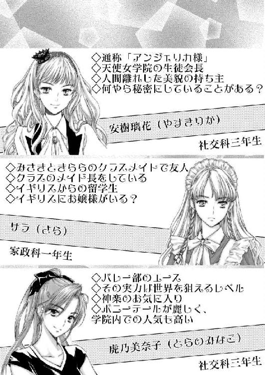
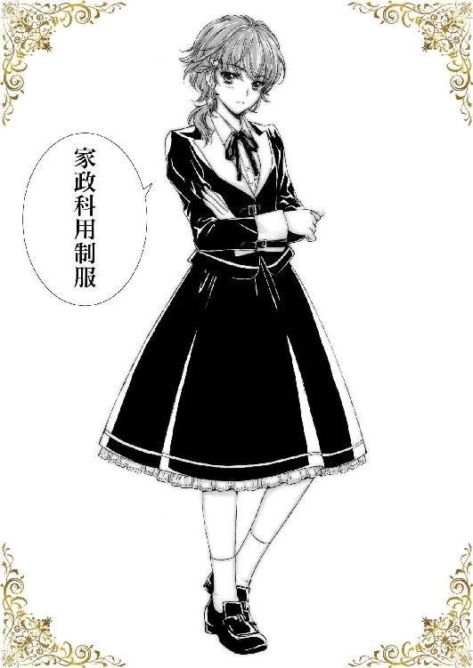
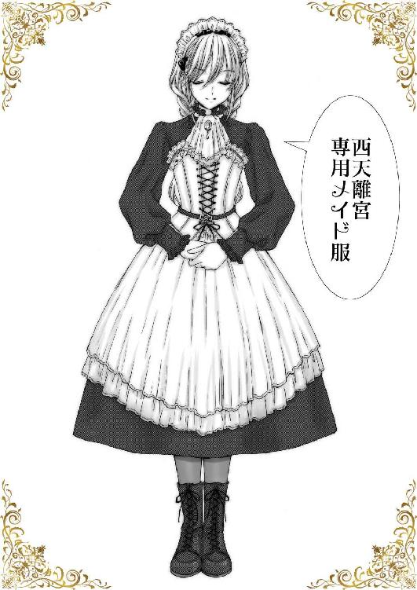

| ガールズキングダム８: メランコリー・サマー (GL文庫) | |
| なよ | |
| 愛中出版株式会社 ＧＬ文庫編集部 (2018) | |




私立天使女学院――
小高い丘の上にそびえるお城のような学び舎は、創立百周年を迎える由緒正しきお嬢様学校として、その名を響かせている。
蝶よ花よと愛でられながら、淑女として羽化する前の、天使のような少女達が過ごす庭。
そこに、十年ほど前から新しい花が咲くようになった。
お嬢様達のお世話をする為に、メイドを志すたんぽぽのような花たち。
白百合の傍に咲き誇り、力強く大地に根を張り、真っすぐに先だけを見つめる。
そこはお嬢様とメイドを志す者が共に過ごす、世にも珍しい学び舎なのだった。
一、新メンバー
空へ向かってかざした手の平の隙間から、夏の日差しがこれでもかというくらいまばゆく輝いていた。
期末試験も終わり、あとはゆっくりと夏期休暇を待つだけの今日この頃。
ちょっと気を緩めてしまいそうになるところではあるけど、まだ少しイベントが残っているので、そういうわけにもいかない。
昨日ついにサクラ様が天空サロンへ所属して頂けることになったので、今日はちょっとした歓迎会が催されることになっているのだ。
きららちゃんと一緒に急いで天空サロンへと向かい、サロンを綺麗に掃除して準備を整える。
サクラ様は色々な意味でとても可愛らしいお嬢様で、お世話できるのが楽しみになってくる。といっても、サクラ様にはすでにセラフがいるので、基本的にはそのセラフがお世話することになる。でも、同じサロンにいればお茶の用意や、ちょっとした用事であれば近くに居る人にお願いするということもあるので、わたしがお手伝いをするということはじゅうぶんにあるのである。
そして何より、サクラ様のセラフというのがわたしのクラスメイトで友人のサラちゃんなので、一緒に天空サロンに居られるというのが嬉しいのだ。
もっとも、それを歓迎していない人もいて、まあそれはきららちゃんなのだけど――
「くっ、ついにこの時が来てしまったわね」
サロンの掃除が終わる頃、きららちゃんがテーブルに片手をついて苦い顔をしていた。
きららちゃんはサラちゃんとの折り合いが悪く、喧嘩をしているというわけではないのだけど、ちょっとライバル意識が強いのだ。だからサクラ様が天空サロンへ所属するイコールサラちゃんも天空サロンへやってくるという流れになってからは、自分の感情をどう抑えるかということに頭を悩ませていたらしい。
「くっくっくっ」
きららちゃんが不穏な笑みを漏らす。
その表情にはライバルがやってくるという嫌悪感というものはなく、むしろとても楽しそうで――
「さあ、早くやっていらっしゃい。天空サロンでの先輩である私が、ここでの決まり事を手取り足取り教えてあげるわ」
きららちゃんは、サラちゃんよりも天空サロンでは先輩であるということを武器に、サラちゃんと一緒に天空サロンで過ごしても良いと、自分を納得させたのだった。
「もう、きららちゃん、サラちゃんをいじめちゃ駄目だよ？」
「あら、失礼ね。私がそんなことをすると思って？」
きららちゃんは顔を上げ、心外だわと眉を吊り上げる。
「私はサラとは仲良くするつもりよ。だって私のほうが先輩なのだもの、優しくしてあげないとね。ふっふっふっ」
まあ、仲良くする仕方にも色々あるだろうけど、とりあえず掴み合いの喧嘩をするなんてことはなさそうだからいいのだろうか。
そんなことを考えているうちに、エレベータの到着する音が鳴り、授業を終えたお嬢様方が次々にやってきたので、二人でそのお出迎えと、今日はサクラ様が来るので、中央のテーブルでお待ち頂くようにお伝えする。ほどなくして神楽様以外のメンバーが揃ったので、わたしは姫子さんのお側に行って待機をすることにした。神楽様はご自身でサクラ様を迎えに行くと言っていたので、到着するまでもう少し、というところだろう。
一年生の教室に神楽様のような有名な方が来たら、さすがに社交科のお嬢様といえども騒がしくなるのかな、なんてことを考えていたら、神楽様と一緒にサクラ様とサラちゃんが到着し、エレベータから揃って姿を現した。
九絵姉妹ときららちゃんが出迎えに行き、ついにサクラ様達を加えた天空サロンのメンバー全てが揃ったのである。
「皆様お待たせ致しましたわ」
神楽様が全員居るのを確かめて小さく頷く。
「皆様ご存じの通り、昨日サクラさんに我が天空サロンを選んで頂けましたので、今日からサクラさんと、そしてサクラさんのセラフであるサラさんと共に、ここでくつろいで頂くことになります。まだ日本へ来て日も浅いですし、何か困っているようであれば力になってあげて下さい。サクラさんも気になることなどあれば遠慮なくおっしゃってくださいね」
「お気遣いありがとうございます。日本のことは独学で調べて参りましたが、聞くのと見るのでは違うこともあるでしょうから、その時は皆様のご助言を頂きたいと思います」
サクラ様は本当に流暢な日本語を話す。もしかするとわたしよりもちゃんとした言葉遣いが出来るのでは？ と思えるほどだ。
「ここでは基本的に皆で集まってお茶をするということはあまりなく、皆それぞれのパーソナルスペースでくつろいでもらうことにしています。サクラさんにもスペースは用意してありますので、サラさんと一緒に自由に使って下さい。もちろん、他の方と一緒に歓談してもいいですし、ここでの過ごし方はそれぞれにお任せしていますので。ただ、メンバー以外の方を招く場合だけ教えて下さい。他人に聞かれては困る話をしている場合もあるでしょうから」
「ええ、そうですね」
神楽様の意図するところを理解していますと、サクラ様は笑顔で答える。
天空サロンはただお茶とお喋りをする為だけにメンバーを集めたのではなく、神楽様の目的の為に集められていて、企業秘密的なお話しをすることもあるので、外部の人は極力入れたくないのだろう。
「それだけ守って頂ければ問題ありません。他にはここで使う備品の場所や使い方などがありますが、それはサラさんにお教えしておけば大丈夫でしょう」
「そうですね、お願いします」
早々にこの話題がきたと、わたしはきららちゃんをそっと見る。
するときららちゃんはわずかではあるけど、鼻息を荒くし、私に教える役目を言いつけて下さいと言わんばかりであった。
その態度に当然九絵姉妹も気がついているだろう。
果たして神楽様や九絵姉妹は誰にその役目を任せるつもりなのか。
神楽様としては、ご自分のセラフにまずは任せるとは思うのだけど――
「きらら、貴女が教えて差し上げなさい。ここでの事ならもうだいたいわかっているでしょう」
「そうですわね。同じ一年生ですし、私たちが口を出すよりもお互い気軽に話せるでしょうし。サラさんも遠慮なくわからないことがあれば聞くことが出来るでしょう」
神楽様よりも早く指示を出したのは九絵姉妹だった。
きららちゃんの態度から何かを感じ取り、面白いことを考えていそうだからやらせてしまえと思ったのだろう。九絵姉妹はそういう人たちなのだ。
「わかりました。そのお役目引き受けさせて頂きます。サラには私の方からしっかりと教えておきますのでご安心下さい」
きららちゃんがパッと顔を輝かせてサラちゃんの方を見る。
それを受けて、サラちゃんもややぎこちない笑顔を浮かべた。
「きららさん、ご面倒をお掛けしマスがよろしくお願いしマス。手早く且つ簡潔に、そして一回で覚えマスので全てのことヲ漏らさず教えて下サイ」
あくまでも新人らしくしおらしく、けれども教えを請うのは一度だけ、というサラちゃんの気概がわたしには伝わってくる。
「あらいいいのよ、そんなに意気込まなくて。わからないことがあればいつでも何度でも教えてあげるわ。だって私のほうがここでは先輩なのだから。おほほっ」
「くっ、大丈夫デス。一回で覚えマスから」
表面上は一応穏やかにしているけど、二人の間では小さな火花が散っていた。
「ふふっ、お手柔らかにお願いしますね。サラもしっかりと言うことを聞きなさいね」
二人の間に流れる物を感じたのか、サクラ様は小さく微笑んだ。喧嘩するほど仲がいい、とでも思ってくれたのだろうか。
「わかっていマス。サクラお嬢様の名を汚すような振る舞いはしまセンからご安心下サイ」
クラスでは全て完璧にこなしていたサラちゃんにとって、これが初めての試練という感じだろうか。
「二人は遠慮のいらない仲みたいですし、あやかたちの言うとおり、きららに一任しましょう。それでは早速サラさんと一緒にお茶の用意をして貰えるかしら。今日はここで皆でお茶にして親交を深めましょう」
九絵姉妹の案を、神楽様もそれで良いと認めたようだ。
「はい、お任せ下さい。それじゃサラ、場所を教えるから付いてきて頂戴」
「わかりまシタ」
弾むような口調できららちゃんはサラちゃんを案内していく。まあ、きららちゃんもサラちゃんの能力は認めているし、問題が起きることはないだろう。
と、わたしも二人を見送っている場合ではなかった。
「わたしもお手伝いしてきます」
「ええ、お願いね」
姫子さんにそう告げて、わたしも二人の後を追ったのだった。
「いいこと？ ここではそれぞれのお嬢様方がご自分で選んだお気に入りのティーカップやソーサーを使っているわ。間違っても他の人の物をお出ししないように。今日みたいに皆さんのお茶をお出しする、なんて機会もあるから自分のお嬢様の物だけ覚えておけばいいとは考えないように」
「わかりまシタ」
「お茶や紅茶も、ここにあるものをどれでも使って良いというわけではないから。それぞれの好みもあるし、ニューフレーバーを見つけたから取り寄せてみたとか、ご友人などから頂いた物を持ってきたなんてこともあるから気を付けないと。自由に使っていい物いけない物があるわ」
「それらはここにいるセラフの方全員が覚えているのデスか。たまたまお休みしている日に、種類が増えたりシタ場合、それらは誰が教えて下さるのでショウ」
「安心なさい」
待ってましたと言わんばかりに、きららちゃんはポーズを決める。
「もちろん記憶だけに頼っているわけでも口頭伝達だけで管理しているわけないわ。ちゃんと備品を管理するチェックシートは作ってあるし、物が増えた場合、セラフがきちんと記入することになっているのよ。それを見れば何があるのか一目瞭然だし、記入されていない物があればそれを確認しにいくこともできるわ」
「ナルホド。ちゃんと考えているようデスね。学生のうちカラ在庫管理を徹底し、棚卸しが出来るようにしてあることは素晴らしいデス」
サラちゃんは良く出来ましたと、生徒を褒めるような仕草で頷く。サラちゃんにとっては当たり前のことのようだ。
一瞬きららちゃんは悔しそうな表情を見せたけど、構わず続ける。
「それから実際に出すお茶菓子についてだけど、各個人の好みまでは教えてあげられないわ。......いえ、大まかな好みについてはもちろん把握しているけれど、その時々で細かな調整が必要だから、これが正解、というのは教えられないのよ」
「わかりマス。体調や気候、精神状態によっても求める物は違うでしょうカラ、お嬢様が何を欲しているのか、どのような物を出せばいいのか、その都度判断しろということデスね」
「そうよ」
さすがにサラちゃんは理解が早い。というよりも、そういったことはすでに身につけているのだろう。
「掃除の仕方なんかは......これは後でもいいわね。とにかく今は少しでも早くお嬢様方へおいしいお茶を出すのが先決ね。ではここで問題よ。サクラ様との懇親会を兼ねている今日の席で、一体誰になんのお茶とお菓子をお出しすればいいかしら」
これはなかなか難しい問題だ。それぞれのお嬢様たちの好みに合わせたお茶はもちろんあるけど、今日はいつもとは趣向が違う。サクラ様が初めて天空サロンへ正式に所属された日なのだ。そこでお出しするのにもっとも相応しいのは――
「そうデスね。少しリストを見させて頂けマスか」
「いいわよ」
サラちゃんはきららちゃんから備品を管理しているリストを受け取り、さっと眺める。そしてすぐに小さく頷いた。
「ナルホド。きららさんたちは、これを全員にお出ししようと考えていマスね」
きららちゃんが備品のリストの最後に書かれている茶葉を指差す。
それはつい先日入荷したばかりのダージリンのセカンドフラッシュだった。ダージリンは神楽様がお好きな紅茶だ。
「あら、どうしてそう思うのかしら」
きららちゃんが眉を吊り上げる。
「まず一つは、これを注文したのがきららさんであり、発注日がほんの数日前だというコト。そして、以前の購入履歴と比較スルと、量が少し多めになっていマス。サクラお嬢様が天空サロンへ来てもいいように、あらかじめ準備をしていたものと推測できマス。さらに量が多いということは、いつもより消費が多くなるであろうコトを見越している。つまりは今日のような時に全員にお出しできるように考えてのコトだと思われマス」
「た、確かになかなかいい着眼点だわ。でも、それだけでは決めつけることはできないでしょう？ サクラ様が他の紅茶を召し上がりたいと言うかもしれないわ」
「イイエ、今日からサクラお嬢様はお客様ではなく、天空サロンの一員となるのデス。最初の一杯は、全員同じ物を飲み、心を合せル。この紅茶はおそらくは神楽様のお好きなものなのでショウ。それを全員が飲むことで、ここの主が誰かわかりマスし、帰属意識を高める狙いがあるものと考えマス。さらに、同じものであるならば、用意する時間を短縮することが出来マス。少しでも早く、且つ全員同時にお出しするというのはとても重要デス。何もないテーブルの上はとても寂しく、また、誰か一人でも用意が滞れば誰かに気を使わせてしまったりと、せっかくの楽しい時間に水を差してしまうことにもなりかねまセン。自分の飲みたいものがあれば、それは二杯目からで十分でショウ。お菓子についても、今日はできるだけ大皿でお出しし、皆さんが一つのお皿から取り分けるということをするのがいいと思われマス。小皿に取り分けるのであればセラフの方にやって頂ければいいでショウ。これも全員の気持ちを一つにするという効果があり――」
「くっ、そうよ」
サラちゃんが最後まで言う前に、きららちゃんは悔しそうに呟いた。
「そうよ、それでだいたい正解よ。まったくかわいげの無い」
「それは良かったデス」
サラちゃんは涼しい顔で小さく微笑んだ。
「実は少しだけ自信がありませんでシタ。イギリスでは日本ほど調和を重視しまセンから。全員が同じ物を頂くというのは日本独自の習わしデスね」
「まあそうね。でも、言っておくけれど、無理に神楽様のお好きな物を召し上がって頂こうというわけではないわよ。サクラ様の好みも加味した上でお飲み物だってお茶菓子だって用意しているわ」
「そうデスね。確かにサクラお嬢様はダージリンティはお好きデスし、お菓子も日本の物はなんでも美味しいとおっしゃっていまシタ。用意されたお茶菓子はサクラお嬢様も満足されると思いマス」
「当然よ。そこらへんのリサーチはちゃんとしているんだから」
きららちゃんが、ふふん、と鼻を鳴らす。
「素晴らしいデス。この短期間にサクラお嬢様の好みを把握できるとは思いまセンでした」
「......」
サラちゃんが素直に褒めると、きららちゃんは少し苦い顔をした。
「言っておくけれど、私だって馬鹿じゃないのだから、サラがサクラ様について語ったことはちゃんと覚えているし、そこからサクラ様の好みだってある程度推測出来るに決まっているでしょう」
「ああ、ナルホド――」
サラちゃんは感心したように頷いた。
「いえ、ワタシの発言が元だったとしても、それをちゃんと覚えていて活用出来るというのは素晴らしいと思いマス。きららさんのみならず、神楽様も、他の方々もサクラお嬢様のことを受け入れて下さって、ワタシは自分のコトのように嬉しく思いマス。ありがとうございマス」
サラちゃんが屈託の無い笑みを浮かべた。サクラ様のことになると、サラちゃんはまるで子供に戻ったかのように素直になるようだ。
「当然のことなんだからお礼を言われる様なことではないわっ。それよりも早く準備をするわよ。お嬢様方をお待たせするわけにはいかないんだから」
サラちゃんの笑顔に不意を突かれたのか、きららちゃんの声はうわずっていた。
「それでは何から致しまショウ」
「そうね、私はティーセットの準備をするから、サラはお湯を沸かしてティーポットを暖めて頂戴。ついでに茶葉の用意も。みさきはお菓子の準備をお願い」
「ワカリマシタ」
「りょうかいっ」
元気に返事をして三人で準備に取りかかる。
こうして三人でいると、とても不思議な気分になる。
入学式初日にかなり敵意を向けられていたきららちゃんと友達となり、そのきららちゃんがライバル視していたサラちゃんがこうしてここにいる。不思議な巡り合わせでこうして三人が一緒のサロンにいるなんて、誰が予想出来ただろう。
私はただ嬉しかった。
「んっふふっ」
きららちゃんとサラちゃんが並んでお仕事をしている姿を見て、自然と笑みがこぼれた。
「ちょっとみさき、何笑っているのよ。準備は終わったのかしら？」
「そうデス。おサボりしていると、みさきさんが一番下っ端になってしまいマスよ？」
きららちゃんとサラちゃんが二人してわたしを背中で押してくる。
「あははっ、なんかね、三人で居られるのが嬉しいなって」
押されて押されて、テーブルに押しつけられても、それがなおさら嬉しかった。
「何馬鹿なこと言っているのよ。私はサラと居たって全然嬉しくないんだから」
「ワタシはサクラお嬢様と一緒に居られればそれでいいのです」
「えー、ほんとにぃ？ きららちゃん、サラちゃんが来るの楽しみにしてたじゃない。サラちゃんだって天空サロンに来てくれる気満々だった気がするんだけどなぁ」
「気のせいよ、気のせい」
「そうデス。サクラお嬢様に相応しいサロンが天空サロンだったというだけデスから」
さらに二人が強く押してくるのを、私はされるがままに受け入れていた。
これだけ言いたいことを言えるのだから、私たちの関係はとてもいいものだと思う。まあ、きららちゃんもサラちゃんも、そういうのは認めたがらない性格だからしょうがないんだけど。
「もう、そういうことにしておいてあげるよ」
「なにが『もう』よ。ふざけたこと言ってないで手を動かしなさいっ」
「はーい。サロン長の仰せのままに」
「だ、誰がサロン長よ。そんなこと他の方達に聞かれたらなんて言われるか」
きららちゃんがワナワナと震えながら離れていく。
ここ天空サロンには、当然ながら上級生のセラフのお姉様方が沢山居る。
九絵姉妹を筆頭に、どのセラフも私たちよりも優秀な方達ばかり。今のおふざけを聞いて、本気で怒る人は居ないと思うけど、その分これでもかというくらいからかわれるということ十分にありえるのだ。むしろ怒られるよりもそちらのほうが恐ろしいという。
「サラちゃんも、お姉様方のおもちゃにならないように気をつけるんだよぉ」
「はあ、よくわかりまセンが、気をつけることにしまショウ」
おどろおどろしく言うと、サラちゃんはこめかみに微かに汗を浮かべて離れていったのだった。
『お待たせいたしました』
私たちがお茶の用意を整えて、中央テーブルの方へ戻ると、すでにかろやかな談笑が繰り広げられているところだった。
「あら、ありがとう。みなさんにお配りして頂戴」
『はい、かしこまりました』
神楽様が軽く手を差し伸べたのを合図に、それぞれのお嬢様の元へお茶菓子をお配りしていく。
サクラ様が居るとはいえ、何度もやってきたことだ。――そのはずなんだけど、きららちゃんがこれでもかというくらい緊張しているのがわかった。視線が手元とどこか別の場所を行ったり来たりしていて落ち着かない。
その視線の先にいるのはサラちゃんだ。
きららちゃんは、サラちゃんを意識しているようだけど。
と――、すぐにわたしもそれに気がついた。
サラちゃんの身のこなしが、明らかにわたしたちとは違うのだ。
背筋をピンと伸ばしながら、しなやかにティーセットを運んでいく。美しい所作に見惚れるが、見るべき場所はそこではなかった。ティーセットを運んでいるときも、置くときも一切音がしないのだ。
きららちゃんはそれでもマシなほうだけど、わたしの方は見比べてみるととてもじゃないけど二人と張り合えるようなものではなかった。
一歩動く度にかちゃかちゃと食器のぶつかる音が甲高く響き渡り、いかにも不慣れな初心者ですといっているようだった。カップを置くときも、こぼさないように気を使うあまり、姿勢は崩れ、カップの中身もこぼれないまでも、荒波の真っただ中といった感じになってしまう。
「うっふふ、きららの負け」
「もっと精進なさい」
九絵姉妹がきららちゃんの様子を感じ取り、配膳するきららちゃんのお尻を撫でた。
「くっ」
きららちゃんは反論も反抗も出来なかった。明らかな格の違いを見せつけられてしまったのだ。それでもきららちゃんはくじけず、サラちゃんの動作を真似てみたりして、少しでも差を縮められるようにしていた。
わたしもさすがに今のままではダメなのはわかるので、同じように真似してみるのだけど、どこをどうやったらあんなに華麗な所作が出来るのかまったくわからなかった。
「ふふ、サクラさんとサラさんの存在はわたくしたちにとてもいい刺激になるみたいですわ」
神楽様がきららちゃんを見て、小さく笑みを浮かべる。
「そうですわね。サラもあれで普段よりもとても気を張っていますわ。きららさんたちのことを意識しているのでしょう」
「そんなことありまセン。ワタシはいつも通りデス」
サクラ様の言葉をサラちゃんはやんわりと否定する。
「あら、本当？ いつもはそこまで丁寧にしていないでしょう」
「そう見えるのでシタら、ワタシがこの学院で成長した証とお受け取り下サイ」
「うーん、そう言われてしまうと、自分のセラフの成長を喜ぶしか無いわね」
「はい、その通りでございマス」
恭しく頭を下げながら、サラちゃんはサクラ様の目の前にお茶菓子を静かに置いた。
うーん、絵になる二人だ。わたしと姫子様も、ああ見えるようになれるといいのだけど。
「おまっ、お待たせっ......いたしましった」
いつもよりも気を使いながら運んだはずなのに、カチャカチャカチャと笑い声のような音を立てながらカップが跳ねる。
「ふっふっふっ」
押し殺したような笑い声が姫子さんの口から漏れた。
「ごめんなさい。でもそうね、みさきもサラさんに少し教えて貰うといいかもしれないわね。みさきが上達してくれたら私も嬉しいわ」
「！」
はっとして顔を上げた。
「はいっ、そうします」
わたしはちょっと嬉しかった。今までこういったお仕事に関して、姫子さんはわたしにこうしろああしろと言うことはなかった。それはわたしと姫子さんの間で交わされた約束が特殊な物だからなのだけど。それが、姫子さんの方から約束を乗り越えて来てくれたのだ。
姫子さんも一瞬「あっ」という顔をしたけど、わたしが気にしていていないことを察してくれたのか、何も言わずにわたし向かって微笑んだのだった。
お茶会はとても和やかに進み、サクラ様は初めから天空サロンに居たかのような馴染みっぷりだった。
「ところでもうすぐ夏期休暇が始まりますけど、みなさんのご予定はいかがでしょう。学院に残る方も帰省する方もいるかと思いますが――」
お菓子も無くなってきた頃、神楽様が全員を見廻して言った。
「私は学院に残るわ。色々と野暮用がありますので」
初めに告げたのは冴子様だった。不敵な笑みを浮かべてニヤリと牙を剥く。あまり聞かないほうがいい用件だと本能が告げる。
「稲穂は帰るの。家のお手伝いをしないといけないの」
「私たちは申し訳ないですが、避暑地で静養させて頂きます」
稲穂様と菫様は帰省されるようだ。
「私は残ろうかと思います。なにせ先日来たばかりですので」
サクラ様が告げると小さな笑い声が起きた。
確かに来て一ヶ月も経っていないのに、とんぼ返りは体にも負担が掛かるだろう。
「せっかくなので、夏期休暇中に学院内をくまなく見て回ろうかと思っています」
「そうですね。この学院は広いですから、わたくしでも行った事のない場所は沢山あると思いますし」
神楽様が頷く。
天使女学院の敷地はとにかく広大だ。高等部の敷地内だけでもお城のような建物が二つあり、周囲を取り囲むように庭園がいくつも広がっているのだ。さらにわたしはまだ見たことがないけど、丘を隔てた場所には、中等部や大学まで建っているという。一体総面積でいったらどれほどの規模になるのか想像もつなかい。そんな場所をくまなく見て回ろうと思ったら、本当に夏期休暇中使う必要があるだろう。
「私はいつも通り残ります。みさきはどうする？」
姫子さんが神楽様に答えながらわたしの方を見る。
「わたしも残りたいと思います」
残るというか、帰るにしても今は何処へ帰ればいいのかわからない状態なのだけど。
「あら、いいの？」
「はい。姫子様のお手伝いをさせて頂きます。それに休み中天空サロンのお手入れもしないといけませんし」
「そう、わかったわ」
姫子さんがにっこりと微笑んで、わたしのお下げに軽く触れた。
「概ねいつもと同じという感じですわね。わたくしは前半は帰省しますので、ここのことは残った方にお願いしますわ。きらら、今回はちゃんと貴女も付いてきなさいね」
神楽様がからかうような視線できららちゃんを見る。
「は、はいっ、お願いします」
きららちゃんは、ゴールデンウィークの時は美奈子様を獲得する為に学院に残っていた。だから、今回が初めて神楽様のご実家へと、ついに足を踏み入れることになるのだ。
緊張した面持ちで、きららちゃんは勢いよく立ち上がり、腰を折り曲げた。
きららちゃんにとっては、卒業後の就職先になるべき場所なのだ。そこへ、一年生の今から挨拶に行くというのはどういう心境だろうか。
心の中で、きららちゃんに「頑張れ～っ」とエールを送った。
二、夏休みの始まり
ピピピピピ、と頭上の方から目覚ましの鳴る音が聞こえた。
半覚醒した意識で手を伸ばし、目覚ましを探し当てて止める。
無事終業式も終わり、今日からついに夏期休暇が始まった。
お休みなのだから、このまま寝続けていてもいいのだけど、そうも言っていられない。
今日は午前中から姫子さんが会議に出ないと行けないのでお見送りして、それからわたしも天空サロンで普段出来ないようなちょっと大がかりな掃除でもしようかと思っている。
だから、二度寝するわけにもいかないのだ。
わたしは横で未だ目を覚まさず、すやすやと眠る姫子さんを起こさないように、そっとベッドから抜け出す。もはや同じベッドで寝るのはいつものことなのだけど、今日からはまたちょっと意味合いが違ってくる。
夏期休暇中は、きららちゃんはもとより、他のルームメイトも初めのうちは皆帰省するというので、それまでは姫子さんの部屋で寝泊まりすることになったのだ。これまでも休日などはずっと姫子さんの部屋にいるということもあったのだけど、それがしばらく続くということはなかなかなかった。
おはようからおやすみまで、本格的なメイド生活？ それとも同棲？
やることは別に変わらないのだけど、より姫子さんの生活に密着することになる。
姫子さんの寝顔を見ると、何かいい夢でも見ているのか、口元にうっすらと笑みを浮かべているように見えた。
紫苑様との事で色々と気にしていたけど、少なくとも夢にまで見るということはないようだ。
わたしは手早くメイド服に着替えて身だしなみを整える。
休日なのだから私服でいいのだけど、決められたユニフォームがあるというのは着る物を選ぶ手間が無くて楽なのと、やはりこの学院内を歩き回るのには制服かメイド服が一番なのだ。
夏期休暇になっても学院内のレストランなどは一部が営業を続けている。そこへ朝食を食べに行ってもいいのだけど、お休みの日は姫子さんが外へ出たがらないのでわたしが前日に買っておいた食材で、サンドウィッチなどを作ることが多い。
というわけで、姫子さんが起きる前にそのサンドウィッチを作っていく。
卵を焼き、ツナ缶を開け、ハムとポテトサラダを用意する。まあほぼ出来合いなのだけど、サンドウィッチってそういうものじゃない？ これだけじゃわからないかもしれないけど、一応わたしも料理を少しずつ出来るようになっているのよ？
出来上がったサンドウィッチをお皿に綺麗に盛り付け、紅茶の用意をしたら完了と。
手を洗って、いそいそと姫子さんを起こしに再び寝室へと向かう。
「姫子さん、朝食の用意が出来ましたよ。そろそろ起きて下さーい」
「......」
耳元で優しく囁きかけるが反応は無し。まあいつものことである。平日は比較的目覚めはいいのだけど、休日は途端に反応が悪くなる。オンとオフの切り替えがしっかりしているということなのだろうか。
「姫子さーん、今日は会議があるんですよね。遅れちゃいますよ～」
「......」
眠り姫の美しい横顔を見ながら、頬を突けば起きるだろうかと不遜なことを考えてしまう。寝顔は本当に美しい。もちろん起きているときも美しいのだけど、起きているときに見つめるのは気恥ずかしさが勝ってしまうので、じっくりとこの美しいお顔を見ていられるのは姫子さんが眠っている時だけなのである。
といっても、ずっと見続けているわけにもいかない。
ちょっと強引な方法で起こしますかと考えていたら、スッと、布団の中から姫子さんの腕が伸びてきた！
「ひゃっ」
と言う間に布団の中に引きずり込まれてしまう。
「せっかくのお休みなのだからもう少しくらい寝ていてもいいでしょう？ 会議は九時からなのだから、いつもより一時間は余裕があるはずだわ」
わたしを後ろから抱きしめながら、姫子さんが眠そうな声で囁く。
「みさきも少しのんびりしなさいな」
背中にぴったりと張り付き、どうあっても離してくれそうもない。どうやら頬を押しつけて、わたしのことを抱き枕代わりにすることに決めたようだった。
「もうしょうがないですね。朝食ももう出来ているので十五分だけですよ」
「ん～、わかったわ」
本当にわかっているのか不安だったが、姫子さんが寝息を立て始めてしまったので、しばらく待つしかないのだった。
「ふあぁぁ」
と、姫子さんが目を覚ましたのはそれから三十分後のことだった。
十五分経った後に、「あともう十五分」と三度寝の要求をしてきて、それに屈してしまったのだ。
「お時間は大丈夫なんですよね」
目覚めの紅茶を淹れながら時計をチラリと見る。姫子さんの言葉が本当なら余裕で間に合うことは確かだ。
「大丈夫よ。それに私がいてもいなくても会議には影響ないわ。ただ座って話を聞いて最後に承認のサインをするだけですもの。それも今日はないかしらね。二学期へ向けての話になるでしょうから、私がどうこうするような話はないわね」
「そう......なんですか？」
姫子さんのやっている理事長代理がどのようなお仕事をするのかさっぱりわからないので、そう返事をするしかない。
「私の方はお昼を少し過ぎる頃には終わると思うけれど、みさきは今日どうするの？」
「わたしは天空サロンへ行って、いつものお手入れと、少し気合いを入れたお掃除でもしようかと思っています」
「そう、ならお昼は一緒に食べられそうね。何がいいかしら、少し冷たい物がいかしら。お蕎麦かおうどんか」
「いいですね。それに甘味があれば文句なしです」
「うふふ、それでは天空サロンで待ち合わせすることにしましょうか」
「はい」
フランソワ館を一歩出ると、夏の強い日差しが容赦なく照りつけてきた。
色濃く地面に落ちる影を見ながら、早歩きで天空サロンのある旧校舎棟へと向かう。
いつもの見慣れた通り道だけど、夏期休暇初日の今日は少し様子が違った。
休日といえば、人気も無くどちらかといえばひっそりとしているのだけど、今は人の姿がまばらに見えていた。社交科の生徒と家政科の生徒が一緒になっている姿が多く、その誰もが大きめの鞄を持っていたりすることから、これから帰省する人たちなのだということがわかった。
きららちゃんはもう出発したのだろうか。連絡する手段がないから神楽様のお家でどう過ごしたか聞けるのは帰ってきたからということになる。電話はしている暇があれば掛かってくるかもしれないけど、便りがない方がいいということもある。こればかりはきららちゃんに任せるしかない。まあ、きららちゃんは九絵姉妹の特訓の甲斐もあって、ここ最近実力を伸ばしているので問題ないと思う。 それに、サラちゃんへの対抗意識もかなり後押ししている。サラちゃんがちょっと頭一つ飛び抜けているだけで、きららちゃんの力は学年の中でもトップレベルなのだ。
知り合いの姿がないか探してみたが、残念ながら見当たらなかったので、そのまま天空サロンへ向かった。
古めかしいエレベータに乗り、天空サロンへ行くと、不思議なことに気がついた。天空サロンに冷房が効いていたのだ。誰かもうすでに来ているのだろうか。
学院に残る天空サロンのメンバーを思い浮かべてみる。
冴子様と、サクラ様、姫子さんはもちろん天空サロンへは来ていない。
となると、冴子様のセラフであるまつりさんだろうか。仕事熱心なまつりさんなら、わたしと同じ事を考え、わたしよりも早く行動しているということは十分にありえる。
入り口のところからまつりさんを探してみたけど、その姿は見えない。冴子様のパーソナルスペースでも掃除しているのかと思い向かってみると、予想していなかった人物がそこに居た。いや、もちろん居ても何の問題もなく、むしろ居て当然の人物だったのだけど。
「わわっ」
思わず声が出る。
「あら、はしたない声をあげて、何か見てはいけない物でも見たのかしら？」
その人物――冴子様がわたしの姿を見て、舌なめずりをした。
「ひえっ、な、なんでもありません。まつりさんがいるのでは無いかと思っていたら、冴子様がいたのでつい――」
わたしがそう言うと、冴子様はけだるそうに背もたれにもたれかかって空を仰ぎ見た。
「まつりならいないわ......。あの子は別のところへ行ってしまったのよ」
遠い目をしながら冴子様が呟く。
よく見れば冴子様のテーブルの上には飲み物一つ出ておらず、冴子様の私物と思われる文庫本が一冊あるだけだった。
「ま、まさか三行半を突きつけて――、それともまつりさんが冴子様の日頃の折檻に耐えられず実家へ帰ってしまったとか――」
「みさきちゃぁあん、ちょっとこっちへいらっしゃぁあい」
冴子様が地獄のような笑みで手招きをする。
「あああっ、嘘ですっ。夏の日差しがわたしにおかしな言動をさせたんです」
じりじりと、この場から逃げ出す為にすり足で後ずさる。
この場にはどうやらわたしと冴子様しかいないようだ。誰の助けも期待できない以上、逃げるのが得策――
「まあいいわ。まつりがいないのは本当で、別のところにいるのも本当だけど、三行半を突きつけたのでもなければ、私から逃げ出したわけでもないわよ」
冴子様が、「まったく」とため息を吐いた。
「は、はあ、そうなんですか」
「まつりは――」
そう言いかけたとき、エレベータの到着する音が聞こえた。どうやらまた誰か来たようだ。まつりさんか、それとも――
「あら、空調が効いているわ。誰かいるのかしら」
「そのようデスね」
わたしと同じような感想を呟いたその声の持ち主はサクラ様だった。どうやらサラちゃんもいるようだ。
「サクラ様とサラちゃんが来たみたいですね」
「どうやらそのようね。お友達のところへ行っておあげなさいな」
「そ、そうですね、失礼します」
冴子様がひらひらと手を振るので、ひとまずこの場を離れることにした。
「サクラ様、サラちゃん～」
よくぞいいタイミングで来てくれましたと、お礼を言いたい気分で二人を出迎える。
「あら、みさきさん。ごきげんよう」
サクラ様がスカートの裾をつまんで膝を折る。
ああ、なんて愛らしい。
「ごきげんよう、サクラ様」
わたしも真似っこで挨拶を返す。すると――
「フム」
わたしとサクラ様のやり取りを見たサラちゃんが、同じようにスカートを手で摘まみ、
「ごきげんよう」
と微笑みながらやってくれたのだ。
サラちゃんも夏期休暇に入り、少し気を緩めているのだろうか。それとも、きららちゃんがいないからだったりして......。
まあ、それはともかく。
「お二人は今日はこちらで過ごされるのですか？」
「いいえ、これから学院探索をしようと思っているのだけど、その前に喉を潤してからと思って」
「そうでしたか」
サクラ様のお世話はサラちゃんがするだろうし、わたしはお掃除を始めようかな。
そう思っていたら――
「あら、それでしたら美味しい飲み物を作ってくれるお店へ案内しますわ。ついでに面白い物も見られるかも」
冴子様がパーソナルスペースから出てきて、わたしたちに微笑みかけてきたのだった。
「まあ、それは嬉しい申し出ですわ」
サクラ様が微笑み返す。
「ただ、来て早々に移動することになってしまいますが」
「構いません。冴子様がどこへお連れしてくれるかの方が気になりますから。それに、とても言い方が気になります。何かあるのですね？」
「まあ、つまらないことですが。お店は先日サクラさんを勧誘するときに使ったエコールキッチン・エリスです」
「ええっ？」
声を上げたのはわたしだった。
冴子様がエリスへ？ 冴子様はエリスの味付けは合わないと言って、まったく行ったことがなかったはずだ。ただ、最近はエリスの味付けもだいぶ変わってきているので、行くようになったということなのだろうか。にしては、エリスで一度も冴子様の姿を見たことがない。姫子さんとわたしは結構頻繁に行っているので、一度も出会わないなんてことはないと思うのだけど。
「あら、みさきちゃん。私がエリスの名前を出したのがそんなに意外だったのかしら」
「そ、そうですね」
素直に頷くしかない。
「まあ、確かに私はエリスへはほとんど行ったことはないわ。でも、今回は特別......かしらね」
いつもの冴子様にしては、言葉に切れ味がない。これは、エリスに何かがあるってことだよね？
「さ、皆様どうぞ」
わたしの疑問をよそに冴子様がサクラ様をエスコートするようにして、エレベータへと向かう。
まあ、エリスならよほど変な事はないと思うのだけど。
エリスに何があるのかまったく予想が出来ないまま、冴子様の後をついていったのだった。
エコールキッチン・エリスはどうやら夏休みも営業しているらしく、この時間でも利用する生徒が訪れているようであった。
すっかり隠れた名店になっているようで、いつぞやの寂れた感じはもうどこにもない。
随分と高くまで昇った太陽に眉をひそめながら、冴子様はエリスの扉の前に立つ。
すると、さっと動いたのはサラちゃんだった。
さりげない動作で冴子様の前へ行き、優雅な動作で扉を開けたのだ。
「はわっ」
しまったどころではない。姫子さんとの時はどうしていただろう。姫子さんが開けるときもあれば、わたしが開けるときもあったような......。少なくとも、自分から率先してエスコートするということは無かったように思う。
「みさきちゃん、良いお手本が出来て良かったわね」
冴子様がよしよしと、子供をあやすようにしてわたしの頭を撫でてくる。
くぅぅ、きつく言われるよりもなお辛い。
他の人たちと行動すると、自分が如何に姫子さんに甘えていたのか思い知らされてしまう。
「うう......、勉強します」
ちょっと成長出来てきたかな、と思っているとこれである。
いやいや、でも確かにサラちゃんは凄くいいお手本だ。せっかく同じ天空サロンの仲間になれたのだから、吸収できるものはどんどん吸収していかなくては。
いっそのこと、きららちゃんのいない間にレベルアップしまくって驚かせるというのも面白いかもしれない。
「サラちゃん、ありがとう」
サラちゃんにお礼を言いながら、冴子様は店内へと足を踏み入れる。
するとすぐに、
「いらっしゃいませ～」
とウェイトレスのはなかさん......の声では無かった。
あれっ？ と頭の中にハテナマークが浮かぶ。
この声は絵理栖様のエクスシアであるはなかさんでも、みづきさんでも、ゆきなさんのものでもない。しかし、聞き覚えのある声に間違いはないのだ。
三人以外で接客する人なんていないはずなのに。もちろん絵理栖様ご本人の声でも無い。
わたしが冴子様の後ろから覗き込むと同時に、そのウェイトレスさんの動きがピタリと止まった。
「さ、冴子様、ここへはいらっしゃらないはずでは――」
「あら、貴女の主人が来てあげたのに酷いことをいうのね」
「まつりさんっ？」
誰であろう、エコールキッチン・エリスでウェイトレスをしていたのは、なんと冴子様のセラフであるまつりさんだったのだ。
どうしてまつりさんがエリスで働いているの？ まさか天空サロンからの脱退？ 冴子様にいじめられる日々が嫌になったとか。それとも、西天離宮のスパイだった？
いくつかの可能性が頭の中をよぎる。
「ほら、早く席へ案内して頂戴。みさきちゃんが混乱して今にも暴れ出しそうだわ」
「暴れませんっ」
冴子様に反論するが、混乱しているのは本当だ。
「それでは個室がよろしかったでしょうか、それとも――」
「オープン席でいいわ。まつりがちゃんと働いているのか見たいもの」
冴子様がにっこりと微笑む。
「かしこまりました。それではこちらへどうぞ」
まつりさんが慣れた動作でわたしたちを席へと案内する。まるでずっとこのお店で働いていたと言わんばかりである。
「あの、一体どういうことなんですか？」
席へ案内して貰った後、まつりさんが一度奥へ戻った隙に冴子様に小声で問いかける。
「どういうことって？」
「どうしてまつりさんがここで働いているかってことですよ。冴子様のセラフなんだから、他で働く必要なんてないですよね。もしかして、セラフを解消されてしまった、なんてことは――」
「ないわよ。せっかくのドレ――セラフを手放すはずないでしょう。まつりはね、いつも長期休暇はいろいろな場所でアルバイトをしているの。今回はたまたま絵理栖さんからの依頼があったからここで働いているのよ」
「で――」
「でも、セラフの仕事はどうしているのか？ どうして私が許可しているのか？」
質問を先回りされて、こくこくと黙って頷く。
「それは単純に、まつりが借金返済の期間を短くしようとしているだけのことよ。休暇中ならそれほど仕事もないし、それに借金を返そうとしているのにダメという理由がないでしょう」
「そ、それはそうですが」
冴子様の言うことにおかしなところはない。でも、なぜだか引っかかる。
先ほど天空サロンで見た冴子様の表情は、まつりさんがいなくても平気というようには見えなかった。少し冗談のように言っていたけど、とても寂しそうに見えたのは事実なのだ。
「お水とメニューをお持ちしました」
まつりさんが戻ってきて冴子様にメニューを渡す。
「あら、ありがとう。随分とサマになっているじゃない。もういっそ、ここでずっと働かせて貰うのもいいのではないかしら？」
「い、いいえ、そんな。私は冴子様のセラフですから、そのようなことは出来ません」
「いいのよ、遠慮なんてしなくても、将来のことを考えるのはとても大切なことだものね」
冴子様はニッコリと微笑みメニューを受け取る。その様子はいつものやり取りと言えばそれまでなのだけど、わたしには少し冴子様の言い方がおかしい気がした。
いつもはいじめているようでいても、ちゃんとまつりさんのことを気遣っている部分があった気がする。それが、今は完全に突き放すような言い方をしなかっただろうか。
「そうね、飲み物と何かスイーツが欲しいのだけど、お勧めはあるかしら」
冴子様はメニューを一度開いてすぐに閉じてわたしに渡してきた。どうやら自分で選ぶ気はないらしい。
「今日からはマンゴーフェアが始まっております。マンゴープリンもしくはレアチーズケーキにマンゴーソースを掛けたものがお勧めで、お飲み物は南国をイメージしたトロピカルドリンクを合せております」
「そう、では私はそれのチーズケーキと、トロピカルドリンクを頂こうかしら。サクラさんはどうされます？」
「そうですね。それでは私はプリンの方を。サラは私と同じもので良かったかしら？」
「ハイ。サクラお嬢様と同じものでお願いします」
「みさきちゃんはどうするの？」
「そうですね。わたしは冴子様と同じものでお願いします」
わたしがメニューを返すと、まつりさんは微笑みながら「かしこまりました」と頷く。
「レアチーズケーキのマンゴーソース掛けがお二つ、マンゴープリンがお二つ。トロピカルドリンクが四つですね。少々お待ち下さい」
まつりさんが優雅に頭を下げて、しなやかな足取りで厨房の方へと戻っていく。
本当に慣れた動作で、とてもじゃないけど今日からエリスで働いているとは思えないほどだ。そのまつりさんの後ろ姿を、冴子様はそっと目で追っていた。
その瞳は慈しむようでもあり、寂しがっているようでもあり、とても不思議な色をしていたのだった。
「サクラさんはイギリスではどちらにお住まいだったのかしら」
「メイフェア地区の外れのほうですわ」
「まあ、確かバッキンガム宮殿があるところでしたかしら」
「ええ、そうです。よくご存じで」
「子供の頃に行ったことがあるんです。衛兵交代式はとても華やかで、何度も見てしまいましたわ」
「まあ、そうだったのですか？ 私もよく見に行っていましたから、もしかして私たちどこかですれ違っていたかもしれませんわね」
「ふふ、そうだとしたら、とてもロマンチックだわ」
なんて、冴子様とサクラ様の雑談に耳を傾けて待っていると、まつりさんがお盆を手に厨房から出てくるのが見えた。
それに冴子様も気がついたようで、ちらりと視線を向ける。
「ねえ、みさきちゃん。少し面白いことをしましょうか」
冴子様がニッコリと微笑む。
「は、はあ、なんでしょうか」
こういう笑顔をするときは大抵良からぬ事を考えているので、ちょっと警戒モードになってしまう。
「あの子が来たら足を引っかけてみてくれないかしら」
「はあ、足を......って、そんなこと出来ませんよっ」
冴子様は急に何を言い出すのか。
「あら、別に転んで怪我をするほど勢いよくやれというわけではないわ。ちょっと躓く程度でいいのよ」
「で、出来ません、いくらなんでもそんなこと」
「あら、そう？ 仕方ないわね」
冴子様はつまらなさそうにため息をついた。
冴子様がまつりさんをいじめようとするのはいつものことだけど、何か物を壊しそうになったり、誰かに――この場合お店に迷惑が掛かるようなことはしないと思っていたのだけど――
「お待たせいたしました」
そんな冴子様の思惑を知らないまつりさんが、テーブルの上に注文の品を置いていく。
「ご注文の品は以上でよろしかったでしょうか」
「ええ、よくってよ。まつり、お店に迷惑のかからないように、一生懸命働きなさい」
「はい、それはもう」
冴子様に励まされて、まつりさんは嬉しそうに頷いてテーブルから離れていく。
冴子様の言動がころころ変わり、一体何を考えているのかまったくわからない。冴子様の真意はどこにあるのか――
「さあ、みなさん。いただきましょう」
うーん、変な冴子様だ。
さすがお勧めだけあって、スイーツもドリンクもほっぺが落ちそうになるほど美味しかった。
店内は徐々に人が増え、エリスがすっかり人気店になっていることを伺わせた。
そんな店内をまつりさんとはなかさんが、忙しそうにテーブルの間を往復している。
そういえば今日はゆきなさんとみづきさんの姿が見えないけど、厨房の方に集中しているのだろうか。
「あら、あなたたち来ていたのね」
食べ終わった頃に声を掛けてきたのは、エコールキッチン・エリスのオーナーである熊城絵理栖様だった。
相変わらず今日もビスクドールのようにお美しい。
「みさきはいつもの常連さんだけれど、今日は珍しい顔ぶれね。ごきげんよう、エコールキッチン・エリスへようこそ」
絵理栖様が、冴子様とサクラ様へ向かって腰を軽く落として挨拶をする。
「ごきげんよう、絵理栖様。今日からまつりがお世話になっておりますので、様子見がてら来させて頂きました」
「そうでしたね。まつりさんは......うちの子よりもしっかりと働いてくれているみたいですし、良いお手本になってくれそうで助かります」
「とんでもありません。もしなにか粗相をすることがあればビシビシと折檻してくださいな」
「......それは冴子嬢にお任せしますわ」
戸惑い気味に絵理栖様がため息を吐く。絵理栖様もご自分のエクスシアには厳しいけれど、さすがに折檻のようなことまではしていないようだ。
「それからそちらはサクラ嬢ね。お話しするのは初めてね。私は一応西天離宮の人間だけれど、このお店はそういったサロンがどうのこうのは関係ないし、実際みさきや姫子嬢は良く来てくれているのよ。だから、このお店が気に入ってくれたら気にせず来てくれると嬉しいわ。もちろんあの子たちはまだ修行中の身だから、味の方は他のお店に劣る部分もあるし、そこは好み次第というところだけれど」
「絵理栖様、ごきげんよう。先日は私の為にお店をお貸し頂きありがとうございました。残念ながら絵理栖様とご一緒のサロンというわけには参りませんでしたが、西天離宮の方々には大変親近感を覚えておりますし、今日のスイーツもとても美味しいですわ。他のお店はまだあまり利用していませんが、このお店は雰囲気も落ち着いていますし、今後利用させて頂くことになりそうです」
絵理栖様の言葉は本心からだと思う。実際、マンゴープリンもトロピカルジュースもとても美味しそうに召し上がっていた。
「そう言って頂けるとうちの子たちも喜ぶわ。そちらはサクラ嬢のセラフだったわね。貴女のことも、もちろん一人で来ても歓迎するわ」
「ありがとうございマス。是非利用させて頂こうと思いマス」
サラちゃんに微笑んだ後、絵理栖様は私の顔を見る。
「みさきは今日は姫子嬢と一緒じゃないのね」
「はい、姫子様は今は会議に出ておられますので」
「なるほど、休暇初日だというのに姫子嬢も大変ね」
絵理栖様はうっそりとため息を吐いた。
「ところで今日はゆきなさんとみづきさんの姿が見えませんけど、厨房の方にこもっているのですか？」
「ああ、みづきは厨房で頑張っているけど、ゆきなは今この学院には居ないわ」
「えっ？」
「あの子は今うちの――本家のお店へ修行へ行っているの。三人順番で行かせて、つつがなく終われば全員セラフにしようと思っているのよ」
「わっ、ついにですか」
思わず小さな叫び声が出た。
「ええ、ついに、ね。みさきには随分とお世話になったし、もしそうなったらちゃんと挨拶に行かせるわ」
「いえ、そんな。わたしなんてたいして役に立っていないですよ。ゆきなさんたちが努力したからです」
「まあ、その方向性が間違っていたのだけどね」
「あはは......」
「まあ、良いわ。というわけで、その為にまつり嬢にヘルプをお願いしたというわけなのよ」
「そうだったんですね」
そっか、ついにゆきなさんたちもセラフになるんだ。もともとセラフになれるだけの力はあったのだし、本当にようやくといった感じだろう。
「それでは私は失礼するわ。皆さんはゆっくりしてらしてね」
「はい、ありがとうございます」
去りゆく絵理栖様の背中が嬉しそうに弾んでいるのは気のせいだろうか。
きっと、絵理栖様もこの日が来るのを心待ちにしていたのだと思う。
それなりに事情を知っている身としては、ほっと胸をなで下ろすのだった。
そして再び残っているチーズケーキを口に運んでいると、
「そういえば、ゆきなさんは三年生だったかしら。卒業されたらこのお店はどうするのかしら」
冴子様が小さく呟く。
「誰かアルバイトでも入れて続けるのかしらね。絵理栖様が卒業したら建物だけ残るのかしら。それは勿体ないから誰か買い取ればいいのにね。そうだわ、適当に言いくるめてまつりに買わせようかしら。みさきちゃん、どう思う。まつりにうまいこと買わせられないかしら」
「ええっ？ そ、それはさすがに無理があるのでは？ それに、まつりさんも三年生なので、絵理栖様より先に卒業してしまいますが」
「そういえばそうだったわね。......ふぅ、どうしたものかしら」
最後の呟きは、もうわたしに向けてのものでは無かった。
こんな変なことを言う冴子様は見たことがない。本当にどうしてしまったのか――
三、メランコリー・サマー
「冴子さんの様子がおかしい？」
わたしがそう告げると、姫子さんが小さく首をかしげた。
「はい、そうなんです」
エコールキッチン・エリスを出ると、冴子様は自室へ戻るからと言い残してすぐに分かれてしまった。
サクラ様とサラちゃんと顔を見合わせて、一度天空サロンへ戻りましょうということになり、戻ってきて少し話していると、早めに会議を終わらせた姫子さんがやってきたのだ。
サクラ様とサラちゃんは、学院探索は午後からに変更して、冴子様異変の謎に付き合ってくれるらしかった。
四人で姫子さんのパーソナルスペースに座り、わたしがエリスでのことを話すと、姫子さんも心当たりがないのか「うーん」と唸るだけだった。
「まつりさんのお仕事を邪魔するように言ったということは、まつりさんがエリスで働くのが嫌だということかしら」
「そうは見えなかったんですけどねぇ。まつりさんが働いているのを見ている時の冴子様は心配しているような満足しているような......少なくとも嫌がっていたりする素振りはなかったです」
「そう......」
沈黙が落ちる。
「理由はわかりませんが、冴子様がまつり様に何をなさろうとしているのか、見当は付きます」
そう言ったのはサクラ様だった。
「それは一体――」
「おそらく、冴子様はまつり様に負債を負わせたいのではないでしょうか」
「ええと、つまりは借金ですよね」
言葉の意味を理解して言い直す。
「確かにまつりさんは冴子様にお金を借りていますけど、それを返す為に頑張っているわけですよね。そこにさらに借金させようということは、もっと利子を取り立てようということでしょうか」
冴子様的にはそちらのほうが儲かるだろうけど、そこまでお金に執着しているイメージがない。冴子様は利子で儲けようとするよりも、神楽様の事業を支援したりと、投資で儲けを出そうとするイメージだ。リスクはあるだろうけど、その分リターンも大きいはずだ。
「ああ、もしかしたら......」
わたしたちの話を聞き、姫子さんが何か閃いたようだ。
「冴子さんは、まつりさんが借金を返済してしまうのを阻止したいのかもしれないわ」
「ええっ？ 折角貸したお金が戻ってくるのにですか？」
「冴子さんは返して欲しくないのかもしれないわ」
「それはまた何故......？」
「冴子さんはまつりさんのお家の借金を肩代わりして、その担保のような形でまつりさんをセラフにしているのよ。だから、借金がなくなれば、まつりさんをセラフにし続けることが出来なくなる。まつりさんを手放したくないから、そんなことを言い出したのかもしれないわ」
「なるほど」
それなら冴子様の言動も理由が付く。
「でも、借金が無くなったからといって、まつりさんが『今までお世話になりました、これからは自由にさせて頂きます』、なんて言うでしょうか。冴子様はまつりさんのことを気に入っているでしょうし、まつりさんは......うーん、いつも怯えていますけど......。お仕置きも結構されているみたいですし......。アルバイトをしているということは、早くお金を返したいと思っているからでしょうし......」
言っていて、借金が無くなった後もそのままの関係で居続けるのは無理そうかも、と思えてきてしまった。
「ど、ど、どうしましょう」
このままではセラフ解消？ 神楽様が居ない間にそんなことになったら、今後の予定に影響があったりしないだろうか。
「どうしましょうと言われても、私たちにはどうしようもないわ。当事者同士でなんとかするしかないし、それにお金の話が絡むデリケートなことですもの。外野が口出しをするべきではないのではないかしら。少なくとも、私が何か言ってしまえばそれはまつりさんにとって、かなり強制的な言葉として受け取られてしまうし。それで話がこじれてしまったら、責任を取ることができないわ」
姫子さんは静かに目を閉じてカップに口を付けた。
社交科の生徒が家政科の生徒に何か言えば、それは基本的に聞いて当たり前になる。だから、社交科の生徒は家政科の生徒に何か言うときは、意外と気を使うそうだ。それで社交科の生徒とお近づきになれるかもしれないと考える生徒が出てくることもあるだろうし、もしその生徒がセラフやエクスシアであったとしたら、うちの子に口出ししないように、なんて言われる可能性もあるのだ。
社交科の生徒の力が圧倒的に強いと見せかけて、実はそうでもない、というのが最近わかってきた。社交科の生徒は品格という物をかなり大事にしているのだ。
「いずれにせよ、心配なら今のうちにまつり様の本心を聞いてみた方がよろしいのでは？」
サクラ様が現実的な意見を口にする。
「まつり様が冴子様から離れる気がないとわかれば何もする必要がなく、冴子様の心配も杞憂に終わることでしょう」
「そ、そうですね。冴子様に聞くよりもそちらのほうが安全で確実そうです。でも、まつりさんがセラフを止めると言ったらどうしましょう」
「そうなったら困るけれど、どうしようもないわね」
姫子さんが、うーんと唸った。
そうなれば当事者同士で解決する問題でしかなく、第三者が口を挟むことではなくなってしまう。
でも、きっとそんなことにはならない。まつりさんは冴子様のセラフで居続けることを選ぶだろう。
そう考えていたのだけれど、現実は正解でいて正解じゃない答えが待っていたのだった。
＊＊＊＊
「私が借金を返す為にアルバイトをしているのはその通りだけど、冴子様のセラフを辞めるなんてことは考えていないわよ」
翌日、アルバイトが終わったばかりのまつりさんを捕まえて聞くと、まつりさんはそう笑顔で答えてくれたのだった。
「そうですよね。あーよかった。もしまつりさんがセラフを辞めるなんて言い出したらどうしようかと心配していたんです」
「そうなの？ 今回はみんなの見えるところでアルバイトをしているから心配させてしまったかしら。確かに冴子様は厳しい方だし、お仕えするのは大変だけれど、とても恩のある方だし、今更お仕えするお嬢様を変える気にはならないわね。それに、これでも二年以上冴子様にお仕えしているわけだし、わたし以外では冴子様のお相手は務まらないという自信もあるしね」
まつりさんははにかみながら言ってくれた。その言葉の中には確かな自信と、信頼関係があることを伺わせた。冴子様とまつりさんは他の人からどう見えようと、ちゃんとした主従関係が結ばれていたのだ。これを冴子様から言ったのならともかく、まつりさんが自分で言ったのだから間違いないだろう。
「それにね、借金を返すことでようやくわたしたちの関係を正常な物に出来るの。やっぱりお金の代わりに仕えているなんて、あまり世間体も良くないものね。冴子様がわたしを求めて、わたしがそれに応えているという形にしたいの」
「そうですね。お互いがそれぞれを必要としているなんて、素敵な関係だと思います」
「でしょう。だから、姫子様とみさきちゃんの関係はとても理想的だと思うの」
「えっ！ そ、そう見えますか？」
「違うの？」
「違いませんっ。わたしには姫子様がいないとダメですし。姫子様もきっとわたしのことを求めてくれていると思います」
「うふふ、そうよね」
嘘は言っていない。お互いが必要としているのは本当だ。
そんなわたしの思考をよそに、まつりさんは話を続ける。
「実はね、数日中に借金が全部返せそうなのよ」
「えっ、本当ですか？」
「絵理栖様がお給金を弾んで下さっているからなのだけどね」
まつりさんが可愛くウィンクしてみせる。
「うふふ、冴子様驚いてくれるかしら」
「驚くに決まってますよ」
「そうだと嬉しいな。ようやくあの方と正面から向き合うことが出来るのだから」
＊＊＊＊
「そう、心配することはなかったのね」
その日の夜、ベッドでごろごろしながらまつりさんの言っていたことを話すと、姫子さんも安堵したように呟いた。
「冴子さんのような気性の激しい方に仕えるなら、まつりさんのように従順か、もしくは紫苑お姉様のセラフであるあおいさんのように、ベテランの風格がある方じゃ無いと無理そうだものね」
「そうですね、わたしではとても務まりそうにありません」
冴子様は怒っていそうでも少しふざけている感じがあるからぎりぎりいけるかもしれないが、紫苑様はもう完全に無理である。
「そうね、みさきは私と一緒にいるのが一番だと思うわ」
「はい、わたしもそう思いますっ」
「うふふ」
「えへへ」
二人で微笑みあって、手を繋ぎ合う。真夏の熱帯夜がそうさせるのか、ちょっとテンションが上がったまま、いつもより姫子さんに甘えながら夏休みに行ってみたいところやしてみたいこと、そういう普段出来ないような話をしながら夜がふけていくのだった。
＊＊＊＊
まつりさんが全ての借金を清算する。
その報せが届いたのは、それからわずか二日後のことだった。
報せが届いたというよりも、まつりさん本人の口から今日肩代わりして貰ったお金を全てお返しして、改めてこれからもよろしくお願いしますと、言ってみれば二回目の契約の儀式を行うと聞いたのだ。
姫子さんとわたし、サクラ様とサラちゃんに、是非立ち会って欲しいとまつりさんは嬉しそうに言っていた。
そして、天空サロンに皆集まっていた。
エアコンが効いているにも関わらず、天空サロンはその場所とガラス張りの部屋という性質上、意外と熱気が漂っている。
それが影響しているのだろうか、冴子様はなぜだかあまり顔色がよろしくない。
今、天空サロンの中央テーブル付近で、冴子様とまつりさんが向かい合わせに立っていた。
私たちがそこからやや離れて二人を見守る。
まつりさんはニコニコと嬉しそうに――
冴子様は、両肘を両手で抱えるようにして、顔を斜め下に向けていた。
なんだか、少し様子がおかしいと思うのはわたしだけだろうか。
まつりさんが借金を返済し、なんのわだかまりもなく新たな関係を築こうという晴れの日なのに、冴子様はあまり歓迎していなさそう？
その様子に姫子さんもサクラ様も気がついているのか、少し顔が曇っている。
まつりさんだけが微笑み、これからのことに思いを馳せている。なんだか、かみ合わせの悪い歯車が回っているようだと思った。
いやでも、それはわたしの思い込みだけに決まっている。
「まつり、今日は何の用？ アルバイトは行かなくていいの？」
冴子様の言葉はいつもより弱々しい。
「はい、今日は午後からのシフトです」
「そう」
まつりさんは冴子様の様子に気がつかず、頬を上気させながら冴子様に一歩近寄った。
「実は今日は冴子様に大切なお話しがあります」
「何かしら」
まつりさんの動きに合わせて冴子様が右足を一歩引いた。
「今まで冴子様にはおうちの事も、わたしのことも助けて頂きありがとうございました。冴子様がいなかったら今頃路頭に迷っていたかもしれません」
「......」
「ずっとご迷惑ばかり掛けていましたが、今日ようやく恩返し――ではありませんね。お借りしていた物をお返しすることが出来るようになりました」
まつりさんがポケットから一通の封筒を取り出す。
「冴子様に肩代わりして頂いていた分の残りのお金です。これでちょうど全てになるかと思います。どうかご確認下さい」
「わかったわ」
静かに冴子様はまつりさんから封筒を受け取り、中身を確かめた。そして手帳を取り出し、何かを記入していく。
「確かに、これで私が肩代わりしていた分のお金は全て精算されたわ。おめでとう、よく頑張ったわね」
珍しく冴子様は優しい声をまつりさんに掛けた。
「はいっ、ありがとうございます」
まつりさんが嬉しそうに頷く。
そのまつりさんに、冴子様が意を決したように近づいた。
「それでは今日から貴女は自由よ」
寂しげな微笑みを浮かべながら、冴子様がまつりさんの襟に手を伸ばす。
「えっ、あの――」
まつりさんが戸惑いの声を上げる。何か異変を感じたようだ。わたしたちも、少し遅れて冴子様が何をしようとしているのか気がつく。
『えっ』
と、わたしとまつりさんが呟くと同時に、冴子様がまつりさんの胸元を飾っていた金色の校章を取り去ったのだ。
「あ、あの、冴子様何を――」
まつりさんは微かに震えていた。
怯えたような表情で、冴子様の手に握られている物を見つめる。
冴子様の手の平の中には、先ほどまでまつりさんの胸元に飾られていた、金色の校章――セラフの証が確かにあるのだ。
「まつりは、私が貴女の家の借金を肩代わりするという約束で身柄をもらい受けたのだから、借金が無くなった今、束縛し続けることは出来ないわ。まつりは約束を守りお金を返済した。なら私も約束を守らなくてはならない。そうでしょう？」
冴子様が姫子さんやサクラ様の方を見る。
「そう......ですわね」
姫子さんは苦しそうに頷く。
冴子様の言うことは当然正しい。だけど、そんなこと守らなくてもいいじゃないかと思う。
だって、明らかに冴子様はまつりさんを気に入っているし、まつりさんだって冴子様の元に居たいと思っているはずなのだから。
でも――
「契約は守られなくてはならない。そうでなければ冴子様の信用に関わるということですわね」
サクラ様がうっそりと呟いた。
「そういうことよ。たとえ他の人間から見たら学生の交わした強制力のないような約束事だとしても、私と、私と関わる人間に、私が約束や契約にルーズな人間だと思われてはいけないの。ましてや神楽さんの事業に手を貸すと約束したからにはなおさらね。わかるでしょう？」
最後の言葉はまつりさんに向けての物だった。
「で、ですが、借金を返したらセラフを辞めるという約束はしていないはずです」
「それは屁理屈というものよ。普通はようやく自由の身になれたと喜ぶ物よ」
冴子様はまつりさんの肩に手を置くと、ゆっくりと向きを変えさせた。その先にあるのはエレベータだ。
「今までありがとう。まつりならきっと良い人に巡り会えるわ。これからも頑張りなさい」
そう言って、エレベータまで押していく。
「冴子様、わたしはっ！」
冴子様はまつりさんが叫ぶのを無視してエレベータに乗せ――そしてまつりさんが天空サロンからいなくなったのだった。
「ど、ど、ど、どうしましょう」
まつりさんがいなくなると、冴子様はすぐに自分のパーソナルスペースへと引っ込んでしまった。
残されたわたしたちは、顔を見合わせてため息を吐くことしか出来ない。
「どうしましょうと言われても、どうしようもないわ。少なくとも今すぐにどうこう出来そうにはないわね」
姫子さんが頬に手を当てて、顔を傾ける。
「で、で、でも、このままにしておくわけには」
動揺のあまり、つい壊れたおもちゃのような声になってしまう。
「もちろんわかっているわよ。でも、今の冴子様には何を言っても聞いてくれそうにないし、少し時間を置く必要があると思うわ。幸い今は夏休み中で、今の出来事を知っているのはごく一部の人のみだから、周知されるには時間がかかるわ。その間に冴子様の心を変えることが出来れば――」
「で、できそうでしょうか」
多少落ち着いてきたものの、やはりまだ動揺は隠せない。
「出来る、と言いたいところだけれど、難しい問題よね」
姫子さんがため息を吐く。
「やり方はいくつかありますわね。あまり褒められる方法ではありませんけど」
サクラ様が控えめに声を上げる。
「本当ですか？」
「ええ、一応は。冴子様は契約と信用をとても大事にされているようですから、ただお願いしたところで『はい』とは言わないでしょう。ではどうすればいいか、それは新たに契約を結ばせればいいのです」
「でも、冴子様は借金を返したまつりさんと、新たに契約するつもりがないんですよね？ それをしてしまうと返済を終わらせたまつりさんをその後も拘束し続けていると思われるから？」
「そういうことですわね。端から見ればとても馬鹿らしいことだとは思いますが、確かにその律儀さは信用に値する物だと思いますわ」
「その冴子様を説得する方法があるのですよね？」
「いいえ、ありません」
「ええっ？」
悪戯っぽい笑みをサクラ様は浮かべた。
「でも、新たに契約を結ばせる方法があるとおっしゃったではありませんか？」
「ええ、確かに言いました。でも、冴子様を説得する必要はないのです」
「そ、それは？」
クイズのように言われても、わたしには到底答えが導き出せるとは思わない。
「みさきさんも、ヒントは聞いていると思いますよ」
「わたしがですか？」
「ええ、先日のエコールキッチン・エリスで。そして、その後の天空サロンでも」
「ええっ？」
あそこで何か聞いただろうか。そう言うからには当然冴子様の言っていたことだとは思うのだけど。冴子様は、まつりさんの仕事を邪魔するようなことをさせようとしていた。それは何の為だった？ 借金の返済を遅らせる為？
「エリスで冴子様はわたしにお仕事の邪魔をして、まつりさんに何か失敗させようとしていましたけど、それは何か物を壊して借金を増やそうとしているのでは？ という話でしたでしょうか」
「そう、それです」
サクラ様が人差し指を立ててみせる。
「つまり、まつり様が新たに借金をして、それを冴子様に肩代わりして貰えばいいのです」
「おお、なるほどっ。それなら今までと同じ関係を保てるというわけですね」
「そうです。ただ――」
サクラ様はくるりと半回転してわたしに背を向けた。
「それを、誰がまつり様に提案するのかということですが――」
「は、はあ。それは誰が言っても、まつりさんなら『はい』というのでは？」
「そうですか。ではみさきさん、そのお役目任せてもよろしいのですね？」
「えっ？」
慌てて姫子さんやサラちゃんを見ると、二人もわたしに背を向けた。
「......」
「......」
「い、いやそんな。人に――それも先輩に借金を勧めるなんて出来ませんよ」
「そうね。社交科の生徒はもちろん。家政科の生徒だって、そんなことを誰かにさせたなんて事が知られたら、退学で済めば御の字ね」
姫子さんが天を仰ぎながら言った。
「まあ、そういうわけでして、案としては悪くないのですが、それを実行できる人がいません」
サクラ様がこちらに向き直る。
「本当に、これが一番簡単な事だと思うのですよ。今までと同じ状態に戻す。でも、当事者にその気がないのだから、外野が手を出し口を出さなければならない。そうなると色々と問題が出てきてしまうのが難しいところで――」
「うーん、まつりさんは今まで借金を返す為に頑張ってきたわけですし、そこに新たに借金をして下さいというのはやっぱりダメですよね」
「そうですね」
「他の案は何かあるのでしょうか」
「これは、少々時間がかかりますが、お二人が納得すればうまく行きます」
「本当ですか？ それは一体！」
「冴子様はつまるところ、契約を守る人間であると周囲に知らしめたいわけです。ですので、新学期が始まってから、まつり様がきちんとお金を返し、冴子様も契約を履行し、一旦まつり様を自由の身にした。まずはそれを多くの人に知って頂いた上で、改めてまつり様から冴子様にセラフにして欲しいと申し出れば良いのではないでしょうか」
「なるほど。それはとても良い考えだと思います」
「いいえ、良い考えでは無いわ」
「はいっ？」
突然肩を掴まれ、強く引っ張られた。
「まったく、こちらに聞こえるような大声で好き勝手に言ってくれるわね」
不機嫌そうな声で、わたしを抱きすくめたのは冴子様だった。
眉間に皺を作りながら、牙を剥いてサクラ様たちを威嚇する。
「悪いけれど、まつりがセラフにして欲しいと言ってきても、私がノーと言えばそれまでよ。それに、サクラさんはまだこの学院のルールがわかっていないから教えて差し上げますけど。基本的にセラフになりたいと家政科の生徒か申し出るのはルール違反よ。そんな礼儀知らずをセラフにするほど私はお人好しでは無いの。いいじゃないの。まつりは自分で頑張って借金を返済したのだから、あとは自由にするべきだわ」
「まつりさんは、冴子様の元に居たいとおっしゃっていたではありませんか」
「そんなもの本心かどうかなんて誰にもわからないわ」
うう、冴子様は意外と頑固だ。
「では、本心だとわかったのなら、まつりさんを再びセラフにして頂けるのですね」
「ノーよ」
「なぜそんなにも頑固なんですかっ」
わたしは思わず叫んでしまった。そして、ハッとしてそれが大変失礼な行為だということに気がついた。
「姫子――」
冴子様はわたしにではなく、姫子さんに低い声をかけた。
「前から言おうと思っていたけれど、貴女少しみさきちゃんを甘やかしすぎじゃないかしら。天空サロンに出入りする生徒として、もっと品位を持って貰わないといけないわ。言葉遣いや態度にもっと気をつけて貰わないと、天空サロンの格が落ちたと周りに思われてしまうわ」
「それはそうなのですが、でもですね、みさきも最近は色々と気をつけているようで――例えば公の場では私のことを様づけて呼んでいたり、態度も私のことを立てるようにしてくれていたりするのですけど」
「全然足りないわ。私に言わせると、姫子たちは主従ごっこの域を出られていないわ。ただ単にそれっぽいことをして、いちゃついているカップルにしか見えないわね」
「いえ、そんな――......そう、見えますか？」
姫子さんが両手で頬を押さえて上目遣いで冴子様を見上げる。
「ええ、見えるわ」
「......そうですか、それは気をつけます」
とうとう姫子さんは顔を真っ赤に染めて、両手で覆ってしまった。
「ちょっと待って――お待ち下さい。そういうことはわたしに直接言って下さい。姫子様に言うなんて卑怯です」
わたしは姫子さんをかばうようにして、冴子様に向き直った。
「あら、卑怯だなんてとんでもない。セラフが粗相したときに責任を取るのは当然主人の役目よ。逆に私がみさきちゃんに直接言うことの方がルール違反だわ。叱るにせよ注意するにせよ、主人がいるのだから、それは主人が行わなければならないのよ。姫子に恥をかかせたくなかったら、みさきちゃんがしっかりすればいいのよ」
「う、うう......確かにその通りではあるのですが――」
「というわけで、みさきちゃんはペナルティとして、今日は天空サロンへの出入りを禁じるわ。さ、外へ出て反省しなさい」
「そ、そんな」
強引に、まつりさんが追い出されたときのように、ずるずると押されてしまう。
「姫子さ～ん」
「み、みさき」
ロミオとジュリエットのように二人で手を伸ばし合うが、その距離は離れていくばかり。
姫子さんといえども、今の冴子様に逆らうことは不可能なようだ。
「二人とも往生際が悪いわよ。今日は言うとおりになさい。みさきちゃんも......」
ふいに、冴子様がわたしの耳に、あることを囁いた。
それを聞いて、抵抗する力がなくなってしまったのだった。
＊＊＊＊
天空サロンを追い出されたわたしは、ある人物の姿を探していた。
それは、もちろんまつりさんだ。
天空サロンを追い出される時に、冴子様がわたしに「まつりのことをお願い」と言ってきたのだ。言われなくてもまつりさんを探すつもりだったけど、冴子様がちゃんとまつりさんのことを気に掛けているのがわかって嬉しかった。
なんだかんだ言っていても、やっぱり冴子様はまつりさんのことを必要としているんだ。
「まつりさんは......と、いたっ」
ほとんど探すまでもなく、まつりさんの姿を見つけた。
天空サロンがある旧校舎の入り口付近の花壇の隅で、生い茂った草木に隠れるようにして座り込んでいたのだ。膝を抱えて、目はうつろ。まつりさんの周囲だけ、なんだか影が濃くなっているように見える。
「まつりさんっ」
その姿があまりにも落ち込みすぎていたので、慌てて駆け寄った。
「あっ、みさきちゃん」
まつりさんが弱々しくこちらに顔を向ける。
つい先ほどまであんなにも輝いていた顔は何処にも無い。目の下にはクマがあるように見え、頬まで痩けているのでは無いかと錯覚するほどだった。
「まつりさん、その......大丈夫です。冴子様はまつりさんのことを必要としています」
「本当？」
「き、きっと......」
冴子様が何を考えているのかわからないのに、あまり適当なことを言ってしまうのは問題がありそうだ。変に期待させてしまうのもいけないだろうし。
「と、とにかく落ち着いて下さい」
とにかく隣に座って、まずはまつりさんの精神を安定させることに努めよう。
「みさきちゃん、あの後冴子様は何か言っていた？」
まつりさんが目に涙を浮かべながらわたしの両手を握ってきた。その手は震え、懇願するような瞳でわたしを見つめてくる。
この状態のまつりさんに、本当の事を言ってしまって良いのだろうか。
冴子様がまつりさんを再びセラフにするつもりがないなんて、とてもじゃないけど告げることは出来ない。
「ええとですね、その......」
もうっ、なんて言ったらいいのだろう。わたしが迷っていると――
「やっぱり、何も言っていなかったのね。冴子様はわたしのことなんてもういらないんだわ」
とうとう堰を切ったように、まつりさんの瞳から涙がこぼれだしてしまった。
わーっと泣き出して、わたしの膝に崩れ落ちる。
「大丈夫です。冴子様はまつりさんのことを気にかけていますから。わたしにまつりさんの様子を見てきて欲しいと言ったのも冴子様ですし。まつりさんのことを大切に思っているのは絶対に本当なんです」
「......」
「本当なんですよ、絶対に――」
繰り返し言って、まつりさんの頭を撫でた。
そう、それだけは確かなのに、良くわからない理由で正直になれないなんて、なんて不器用なのだろう。
わたしだったら――
わたしだったら？ あれ？ わたしだったらどうするんだろう。わたしも姫子さんに別れを告げられる日が来るのは確定している。そうなったら平然としていられるのだろうか。いや、元々その予定なのだけど、あれっ？ なんだかちょっと心臓のあたりがざわめいてきた気が――
「みさきちゃん？」
膝の上のまつりさんが顔を少しこちらに向ける。
「はっ、いえなんでもないです。まつりさん、心配しないで下さい。きっと冴子様を説得してみせますから。冴子様がまつりさんを必要としているのなんて、見ていればすぐわかるんですから」
「いいのよ無理をしなくても。みさきちゃんたちには迷惑をかけられないから」
涙を拭きながらまつりさんは体を起こした。目元が腫れ、とても痛々しい。
「迷惑なんかじゃありません。天空サロンの仲間じゃないですか。まつりさんにはまだ沢山教わりたいこともありますし、居て貰わないと困るんですから」
「ありがとう、みさきちゃん」
ぎこちない笑顔をまつりさんは見せた。きっと今のわたしの言葉なんて半分も届いていないに違いない。
「一応確認しておきますけど、まつりさんは冴子様のセラフで居続けたいんですよね？」
「それはもちろん。もうあの方以外にお仕えするなんて考えられないわ」
「それが聞けてよかったです」
まつりさんも冴子様のことを必要としている。絶対になんとかしないと。
「まつりさん、今日はわたしの部屋に泊まりませんか？ ルームメイトはきららちゃんも、他の人も帰省してしまって誰も居ないんです。折角の機会なので、まつりさんともっとお話ししたいのですけど、ダメですか？」
「わたしはいいけれど、みさきちゃんは姫子様のお部屋にお泊まりしているのではないの？」
「大丈夫です。姫子様にもちゃんと許可ももらいますから。今のまつりさんを一人にしておく方が心配です」
「えう～。後輩に心配させるなんてダメな先輩でごめんなさい」
「いいんですよ。わたしだってそのうち迷惑を掛けてしまうと思いますし」
というよりも、普段から迷惑掛けっぱなしのような気もするけれど......。
少しでも恩返しが出来るのなら、その機会を逃したくは無い。
「それじゃあ今日はお世話になっちゃおうかな。一人で居てもやることもないだろうし、冴子様のところへ行けるわけもないし......」
「今日だけじゃ無くても、夏休みの間なら大丈夫ですから。と、とにかく移動しましょう」
まつりさんからまた負のオーラが出始めたので、慌てて立ち上がって手を取る。
「そういえば、今日もエリスでアルバイトが入っているんですよね？ 今日はお休みしますか？ よろしければわたしが伝えに行ってきますけど」
こんな状態で仕事なんて、と思ったけど――
「ううん、大丈夫。アルバイトにはちゃんと行くわ。約束したことは守らないといけないものね。それに、わたしが冴子様のセラフをクビになったことはまだみんな知らないはずだから、アルバイトをサボってしまったら冴子様の評判にも関わってしまうわ」
「そ、そうですか」
約束を守る。それはとても大切で、もちろん守らなければならないことだ。でも、まさか約束を守ることが、誰かをこんなにも苦しめることがあるなんて思いもしなかった。
＊＊＊＊
一度わたしの部屋に案内して、お茶を飲みながら話をしていたら、まつりさんはだいぶ落ち着いてきたようで、弱々しいながらも笑顔を見せてくれるようになっていた。これならアルバイトに行っても多分大丈夫だろう。
お昼になり、まつりさんがアルバイトに行くのを見送ってから、姫子さんに連絡をして、お泊まりに必要そうな物を買うことにした。
天空サロンへは今は上がらない方が良さそうなので、先ほどのまつりさんと同じように下で待っていると、姫子さんがちょうど降りてきてくれた。
以心伝心のごとく、わたしと姫子さんの心が繋がっているのかと感動していたら、
「上からみさきがやってきたのが見えたから迎えにきたの。天空サロンにはまだ冴子様がいるから上がってこない方が良いと思って」
と、少し残念なネタばらしをされたのだった。
「そうですか。でも、見つけてくれてよかったです。降りてくるまで待っているつもりだったので」
「そう、まずは少し場所を変えましょうか。さすがに外は暑くてたまらないわ」
姫子さんが眩しそうに片手で日差しを遮りながら空を見上げた。
雲一つ無い空の上からは、容赦なく日差しが降り注いでいる。
あまりにも日差しが強すぎて、逆に気が滅入ってしまいそうになるほどの好天だ。
「エリスに行くのは止めた方がいいわね。校内でやっているお店に行きましょう」
姫子さんがわたしの手を握って歩き出す。
「はい」
わたしもそれを握り返しながら、こうしてわたしの手を取ってくれるお嬢様がいるのは、とても安心できることなんだなと思ったのだった。
＊＊＊＊
校内のお店は長期休暇中ということもあり、半分くらいが閉まっていた。学院に残っている生徒の数を考えると、店舗の数としては十分すぎるほどだと思う。
あまり利用する生徒がいなくても普段通り営業してくれるということは、学院側からそれなりの支援金が出ているのかもしれない。中にはまつりさんと同じように長期休暇中は各お店でアルバイトをする生徒もいるらしく、その為に営業している部分もあるのだろう。
その中で姫子さんは、軽食も取ることの出来るカフェへと入っていった。
「ついでだからお昼ご飯も食べていきましょう」
本来の予定であればお昼はエリスへ行こうと話していたのだけど、今日はもうエリスへ行くつもりはないということだろう。姫子さんも、今のまつりさんにどう接していいのか迷っているのかもしれない。
カフェへ入ると、姫子さんの姿を見つけたウェイトレスさんがすぐに駆け寄ってきた。どうやらアルバイトをしている家政科の生徒のようで、緊張した面持ちで姫子さんを席へ案内していく。カフェの中はお昼時ということもあり、半分くらいの席が埋まっていた。セラフと一緒に来ているお嬢様が多く、セラフが居ても意外と学院に残ったりするものなんだなと、ふと思った。卒業すればずっと家で一緒にいることになるのだし、今は学院での生活を満喫した方がいいと考えているのかもしれない。
「それで、まつりさんの様子はどうだったかしら？」
席に着き、手軽に食べられるサンドウィッチとオレンジジュースを二人分注文して、姫子さんは少し顔をしかめながら話を切り出した。
「そうですね......、とても落ち込んでいましたけど、わたしのお部屋で少しお話しをしていたら多少は落ち着いてくれたようでした。今はエリスへアルバイトをしに行っていますけど、働いていた方が余計な事を考えなくて済む分良いのではないかなと思います」
「そう。ヤケになっていないというのであれば良かったわ」
姫子さんはほっと息を吐いた。
「あ、それでですね。まつりさんを今日は――というか、もう少し落ち着くまで数日は、わたしのお部屋に泊まって貰おうかと思っているのですけど」
「そう......。そうね、それがいいかもしれないわね」
多少落ち着いたとはいえ、今の状態のまつりさんを一人にしておくのは色々と心配である。姫子さんの言ったようなヤケになっていないというのも、今だけなのかもしれないのだ。夜中に冴子様のことを思い出し、何かが起きてしまったというのでは困る。
「夏休みの間はずっとみさきといられると思っていたのだけど、なかなか難しいわね」
姫子さんが右手を伸ばし、わたしの左手に重ねた。
優しくも悪戯っぽい笑みを向けられて、なんだか顔が熱くなってくる。
「そ、そうですね。わたしもそのつもりだったのですけど」
姫子さんがさわりさわりと絶妙な加減で手を撫でてくすぐってくるので、耐えられなくなり、するりと抜け出して、逆に姫子さんの右手に重ねて仕返しをする。
「うふふ」
姫子さんもそれに抵抗して、姫子さんの右手とわたしの左手の攻防が始まる。
見た目は優雅に談笑している風を装いながら、くすぐりあったり指を絡めたりしながら、相手のギブアップを誘い合う。
一体何の勝負かはわからないが、姫子さんがとても楽しそうにしているので、わたしもつい本気になって相手をしてしまう。
そうこうしていると――
「あ、あの、ご注文の品を、お、お持ちしました」
いつの間にかウェイトレスさんがワゴンを押して、わたしたちの席まできていたのだった。
「あら、ありがとう」
何食わぬ顔で手を離して、姫子さんがニッコリと微笑む。
「し、失礼致します」
顔を真っ赤にしながらウェイトレスさんが、サンドウィッチとオレンジジュースをテーブルの上に置いていく。
は、恥ずかしいぃいい。
姫子さんとは反対に、わたしの顔は沸騰しそうなほど熱くなっていた。
二人だけの時ならいざしらず、姫子さんにじゃれついているところを誰かに見られてしまうなんて。外では姫子さんのセラフとして隙を見せないようにと最近は心がけていたのに、夏休みになってつい気が抜けてしまっていたようだ。
「どうしたの？ みさき」
「な、なんでもありません」
頬を両手で軽く叩いて表情を引き締める。
「さ、姫子様、頂きましょう」
「ふふふっ」
そんなわたしの変わり様が面白かったのか、姫子さんは時折思い出した様に笑いながら食事をしていたのだった。
「それではまつりさんのことをお願いね。私も冴子さんともう少しお話ししてみるわ」
「わかりました。まつりさんをできる限り元気づけておきます」
「ええ、何かあればすぐに連絡するわ」
姫子さんが名残惜しそうにわたしのお下げに触れて、毛先を指先に絡めていた。少しくすぐったい気分と、離れがたい気持ちになってしまうが、わたしたちにはやらなければならないことがある。
まつりさんたちのことをなんとかしなければ、安心して夏休みを満喫することができないのだ。
お店を出て、今後の予定を改めて確認して、わたしたちは別れた。
姫子さんは再び天空サロンへ行って、サクラ様と相談して、できれば冴子様ともう一度話し合いたいと思っているようだ。
わたしはまつりさんがアルバイトから戻ってくる前に、まつりさんがお泊まりしてもいいように準備を整えることにした。
準備といっても必要なのは消耗品くらいだろうか。タオルと歯ブラシは新品を用意しよう。下着は......まつりさんが自分で用意するかな。もし、普段から冴子様のお部屋で生活していて、生活用品一式全てを冴子様のお部屋に置いていたりしたら、取りに行けないだろうしなぁ。これはまつりさんに聞いてから買うかどうか決めよう。
食事は外で食べる気分じゃないような気がするし、お部屋で食べれる様に食材を買っておいたほうがいいかな。
買い物が済んだらお部屋の掃除をして、アロマを炊いて少しでも気分が落ち着く様にしてみよう。
うん、よし。
頭の中でまつりさんを元気づける為の計画を練り、お店へと向かう。
まずはまつりさんに落ち着いて貰って、一緒に冴子様のセラフに戻れるような案を練ることが出来るといいのだけど。
日用品を買うなら家政科寮にあるお店に限る。
そう、校舎の中にあるようなお店は基本的に社交科の生徒向けの物が多く、ハッキリ言ってしまえばお高いのだ。いくらお給金を貰っていようとも、社交科の生徒の生活レベルに合せた買い物をしていてはいくらあっても足りない。
というわけで、姫子さんと別れて家政科の寮へと向かっているのだけど、その帰り道でわたしはある人物を見かけた気がした。
雑木林の影に隠れて、その人は足早に駆けていた。この学院で、たとえ外でも走るようなお嬢様は運動部の生徒以外ではいない。だから、初めは見間違えかなと思ったのだ。
お嬢様といったのは、その人が社交科の制服を着ている様に見えたからだ。
遠目でも、社交科の制服と家政科の制服は見間違えようが無い。
さらには、その人物の名前も頭に浮かんでいた。
「今のはアンジェリカ様？」
ほんのわずかな情報からでも導き出せるほど、アンジェリカ様の人ならざるオーラが漂っていた気がしたのだ。アンジェリカ様はなんだかんだで話す機会が多いので、その姿を間違えることはないと思う。
アンジェリカ様も帰省せずに学院に残っているんだ。そもそも、アンジェリカ様の故郷ってどこだろうか。アンジェリカ様は実は吸血鬼らしいので、イギリスとかルーマニアとかそちらのほうなんだろうか。
まあ、何はともかく、アンジェリカ様が走っているということは、何かあったのだろうけど......。
......うん、何も見なかった。わたしは何も見ていない。
アンジェリカ様はこの学院のことが気に入っているみたいだし、学院で問題が起これば人知れず解決していたりするみたいだから、今回もそういうことが起きているのかもしれない。
普通の人間であるわたしが行ったところで、足手まといになるのは確実だ。
姫子さんのところに問題が上がってこないということは、つまりは普通の人手は手に負えない問題ということだろうし、ここはアンジェリカ様にお任せするのが最善だろう。そもそも、もうすでに追いつけるようなところにはいないだろう。
自分にそう言い聞かせて、わたしは買い物に向かい、まつりさんを迎える準備を整えることにしたのだった。
＊＊＊＊
「改めまして、いつまでお世話になるかわかりませんがよろしくお願いします」
アルバイトから戻ったまつりさんは、ちゃんとわたしの寮の部屋へと戻って来てくれた。もしかしたらそのまま家出？ しちゃうかもなんて考えがちらりと脳裏をよぎっていたことは秘密だ。
「気にしなくても大丈夫ですので、頭を上げて下さい」
玄関で膝を付いて深々とお辞儀をするまつりさんを、慌てて止める。
「でも、色々ご迷惑お掛けした上に、泊めて頂くのだから......」
「そんなのもう本当に気にしなくて大丈夫ですから。冴子様とのことは色々と驚いていますけど、こうしてまつりさんと二人でお話しできる機会って今まであまりなかったし、わたしは少し楽しみにしているんですから」
まつりさんの手を取って立ち上がって貰う。
「でも......」
「でも、は無しにしましょう。そういうことを言われるとわたしが困ってしまいます」
「う......そうだね。それじゃあお邪魔します」
「はいっ」
ぎこちない笑みを浮かべながらも、まつりさんは素直に頷き部屋へ上がってくれた。
「はあ、家政科の寮で泊まるの久しぶりかな」
「あっ、やっぱり普段は冴子様のお部屋で生活しているんですか？」
「うん、もう一年以上になるかな。自分の部屋へはたまに荷物を置きに行ったりするくらい」
「そうなんですか。わたしも最近は姫子様のお部屋に泊まることが多くて。やっぱりセラフになっている人はそういうことが多いんですかね」
「うん、そうね。やっっぱりセラフになるってことはお嬢様の全てをお世話するってことだから、お嬢様にしても一番近くに置いておきたいって思うんじゃないかしら？」
「そうなんですか、って」
まつりさん普通にお話しできるし、だいぶ回復してきたのかな、なんて思いながらメイド服を脱いで振り返ると、まつりさんはいつの間にかベッドの上で体育座りをしていた。そして、
「はあー」
とため息を付いて、完全に引きこもりモードに移行していたのだった。
どんよりとした空気が、頭の上に漂っているように見えてしまう。
「ま、まつりさん、とりあえずお茶を入れますから、テーブルの上を片付けるのを手伝って貰っていいですか？」
テーブルの上は、アルバイトへ行く前に二人でお茶をしたままの状態になっていた。
「あ、うん。任せて」
お願いすると、まつりさんはすぐに動いてくれた。
きっとまつりさんは、常に何か仕事をしていた方が調子がいいタイプだと思う。落ち込む隙を与えないようにした方がいいのだろうけど、そうそうお願い出来ることもないし、なんとかお喋りしながら気分を上向きにできたらいいのだけど。
二人でキッチンに立ち、洗い物とお茶の用意をしながらまつりさんの様子を伺う。
「まつりさん、冴子様とは借金返済後のお話しなんかはしたことなかったんですか？」
冴子様の話を振るのは抵抗があったけど、セラフ復帰の為には情報が少しでも多くあった方がいいだろう。
「そういう話をしたことはなかったわね。一番初めに冴子様とお会いしたときのことなんだけど、銀行の方と一緒に冴子様がいらっしゃって、初めは不思議だったわ。どうして子供が一緒にってね。その時は両親が話している間、冴子様とお話ししたり、近くを案内しただけだったのだけど、後日ある条件と引き替えに借金の返済期間を延長してくれるって言ってきたの。それが冴子様と同じこの学院に通ってこうしてセラフになることだったの。天使女学院ではお給金も出るし、返済計画としても随分といい条件だったからそれで構いませんって返事をして、わたしは冴子様のセラフになったわ」
洗い物が済みお茶の準備も出来たので、わたしたちはテーブルの方へと移動しながら話を続ける。
「最初の時に、わたしをセラフにするか見定めていたのね。わたしは初めからセラフになることに異論はなかったし、実際にセラフになってからは冴子様が厳しいとこれはあるけれど理不尽なことはされなかったし、借金返済の為に色々と手を尽くしてくれたから、一生この方にお仕えしたいと思っていたわ。だから、借金を返済した後のことなんか考えたこともなかったし、一日でも早く返済して冴子様のおかげでこうしてお返しすることが出来ました。これからもよろしくお願いしますって言いたかったのに」
まつりさんはカップを持ったまま重いため息を吐いた。
「あのっ、冴子様だって本心でまつりさんと別れたいと思っているわけでは無いと思います。冴子様も言っていたじゃないですか、信用の為だとか体面の為だとか。そこら辺をなんとかすれば今まで通りの関係でいられるはずですよ」
「......そうだといいのだけど」
まつりさんは目を伏せてゆっくりとお茶を一口飲む。
その表情はあまりにも悲しそうで、唇が震えているように見えた。きっと沢山の感情がうずまいて、心の中では「どうして」という言葉で溢れかえっているに違いない。
「本当に、喜んで頂けると思っていたの」
深く息を吐いて紡ぎ出した言葉と共に、まつりさんの瞳に涙の粒が浮かんできた。頑張って耐えていたものが、冴子様のことに思いを馳せる時間が出来てしまったことで、我慢出来なくなってしまったのだろう。
「よく頑張ったわねって褒めて頂けると思っていたの。でも、『私のセラフになったのだから、これからもこれまで以上に尽くしなさい』って言って頂けると思っていたの」
まつりさんがこぼれ落ちる涙を隠すように俯く。
「どうしたらまた冴子様のセラフになれるのか全然わからないの。冴子様は自分で言ったことを簡単に変えるような方では無いでしょうし、わたしの話ももう聞いてくれないと思う。だからお願いします」
まつりさんが俯いたままわたしの方へ体を向けて、頭を床に付くまで下げてきた。
「お願いします。冴子様のセラフにもう一度なれるように力を貸して下さい。その為ならわたしは何だってします。だからどうか――」
「まつりさんっ、止めてくください。そんなことしなくても、わたしも姫子さんもサクラ様も......ここにいない他の方達も皆さん力を貸してくれるはずです。冴子様のセラフはまつりさんしかいません。わたし、最近わかってきたんです。セラフに選ばれる人って、お嬢様とどこか運命的な繋がりをしているって。パズルのピースが合うみたいに、その人に一番合う人がセラフに選ばれるんです」
「ありがとう、みさきちゃん。わたしも......わたしも冴子様のセラフはわたししかいないと自負しているわ」
涙をぬぐいながらまつりさんは顔を上げた。まだぎこちないけど、まつりさんは笑顔を見せてくれた。
良かった。笑顔をみせられるくらいには心が落ち着いてきたようだ。
それからわたしたちはささやかな夕食を一緒に作り、夜は二人でベッドに座りながら、お互いのお嬢様自慢のようなものを夜遅くまでしたのだった。
四、真夏の日差しとヴァンパイア
翌日、わたしは姫子さんに会う為に天空サロンへ、まつりさんは今日もアルバイトへと行くことになっていた。
まつりさんは今自分に出来ることを精一杯こなすことで、冴子様のセラフとして冴子様の名前を汚さないようにすると元気に言ってくれた。
その瞳にはまだ悲しみが見え隠れするけど、絶望の色はなかった。
だからわたしは安心して、一足早く天空サロンへ行くべく部屋を後にしたのだった。
＊＊＊＊
アンティークなエレベータを使い、天空サロンへやってきたけど、残念ながら姫子さんはまだ来ていないようだった。
今日は特に予定はなかったはずだから、姫子さんももう少ししたら天空サロンへ来てくれるはずなのだけど――。頭の中で姫子さんの予定を思い出して、しばらくは会議などが入っていないことを確認する。
もしかしたら誰も起こす人がいないから眠り続けている、なんてこともあるかも。うーん、しまったちょっと遠回りになってしまうけど、姫子さんの部屋へ行ってから来れば良かった。
まあいないものは仕方がない。いないならいないで、その間に掃除や雑用を済ませることが出来る。なにせ今、天空サロンのメンバーで学院に残っているセラフはわたしとまつりさんとサラちゃんしかいないのだ。
まつりさんは冴子様との問題が解決しないと天空サロンへは顔を出しにくいだろうし、サラちゃんはまだ天空サロンに所属したばかりだし、今の時間だとサクラ様の身の回りの世話をしている頃だろう。もしかしたら昨日出来なかった学院巡りをしてから天空サロンへやってくるということも考えられる。そうなると、天空サロンのあれやこれやを出来るのがわたしだけということになってしまう。出来るだけ手際良く進めて姫子さんが来る前に全て片付けてしまいたいところだ。
今やるべき事は、サロンの掃除と植物への水やり、備品の確認は夏休みに入る前にやったからこれは問題ない。ああ、あとゴミを出さなければいけないんだった。このゴミ出しというのが意外と厄介な仕事で、以前――といっても新校舎が出来る前の話なのだけど――その時は旧校舎であるこの建物の裏手にゴミ収集所があったらしいのだけど、新校舎が出来ると同時にその収集所が新校舎に近い場所へ移ってしまったのだ。だから、収集所へは少しばかり長い距離を歩かないといけなくて、燃えるゴミだけならいいのだけど、ビンや缶といった燃えないゴミが溜まってくると、運ぶのが大変なことになってしまう。
明日の午前中に回収業者がくるはずなので、今のうちに出しておかなければ最悪夏休み明けまでゴミを保管しておかなければならなくなる。それほど溜まっているというわけではないのだけど、落ち葉を集めたものや、サクラ様の歓迎会で出たゴミがまだ残っているので早めに持っていった方がいいだろう。今ならわたし一人でも余裕を持って捨てに行くことが出来る重量のはずだ。
今からゴミを捨てに行って、帰ってきてから掃除と水やりをすれば姫子さんと入れ違いになる確率も減るだろう。となれば善は急げである。ゴミ袋を二つ持ち、再びエレベータを使い外へと出る。
やや日差しがきつくなってきたなぁと感じる。ほんの少し時間が経つだけで気温がどんどん上がってくる。これは一番初めにゴミ捨てを選んで正解だったかも。もう後三十分でも遅くになっていたら、汗だくでゴミを運ぶことになっていただろう。
新校舎の裏手へと続く道すがら、部活の準備をする生徒達と何度かすれ違った。神楽様が事業を興そうとしているだけあって、天使女学院は何気にスポーツが強いのだ。美奈子様のいるバレー部を筆頭に、テニス、バドミントン、フェンシング、馬術などはインターハイ常連校なのだとか。美奈子様も最後の夏に向けて猛練習をしていることだろう。大会の日程などはわたしではわからないけど、まつりさんの問題が解決したら一度差し入れなどを持って、練習を見に行くのもいいかもしれない。その時は姫子さんも誘ってみることにしよう。
そんなことを考えながら収集所まで辿り着いた。休み前に他のサロンもゴミ出しをしたのか、随分と積み重なっている。わたしもその端に置いて、にじんだ汗を拭う。そして再び天空サロンへ戻ろうとしたのだけど、視線の先で何かが飛び跳ねている気がした。それは鳥と呼べるような小さな物ではなく、見間違えでなければ人間のような気がしたのだ。あれ？ っと昨日のことが脳裏をよぎる。昨日も確かこんなことがあった。その時はアンジェリカ様のように見えたのだけど、結局確証はなかった。今日のも確証はないのだけど、あの影はアンジェリカ様のようにも見えた。アンジェリカ様は吸血鬼なので、ああして木々の間を飛び跳ねるなんてことも出来てしまうのだ。実際、以前はわたしの頭上から舞い降りて来た、なんてこともあった。だからわたしはアンジェリカ様かな、とすぐに思ったのだ。
一体アンジェリカ様は何をやっているのだろう。あっちは庭園を外れ、完全に雑木林になっているような場所だ。見回りをしているにしては急ぎすぎているような気がする。万が一他の人に見つかったら大変なことになってしまうのではないだろうか。
ちょっと気になるなぁと思っていたら、今度はアンジェリカ様の後を追うような影がまた一つ現れた。今度は飛び跳ねるのではなく地面を走っているように見えた。ただし、その速度は遠目に見てもあまりにも速く感じた。
まさかとは思うけど、鬼ごっこをして遊んでいたりするのだろうか。......いやいや、アンジェリカ様がそんな子供っぽい遊びをするはずがない。じゃあ修行的な？ それも今更な気がするし。
うーん、昨日は見て見ぬ振りをしていたけど、やっぱり気になる。
もし何かあったとしても、アンジェリカ様自身が動いているということは、あまり一般の生徒には言えないことなのだろう。正体を知っているわたしなら、可能な範囲であればお手伝いすることも出来るはずだ。ちょっと様子だけ見て、わたしでは手に負えないようなことだったら、その時はゴメンナサイと言えばアンジェリカ様も何も言わないだろう。
よし、時間もまだあることだし、少しだけ様子を見てみることにしよう。
よく手入れをされた庭園を抜け、雑木林に入ると日差しがよく遮られていて体感温度が幾分下がった気がした。道はあまり良くはないけれど、歩けないほどでは無い。
確かアンジェリカ様はあっちへ行ったはず、とアンジェリカ様が向かった方へと歩き出す。
学院の裏手はやや高低差の付いたうねり道が続き、後ろを振り向けばいつのまにか校舎の姿は見えなくなっていた。この先は何があっただろうか。確か何か建物があるということはなく、やや開けた雑木林が続くだけだっただろうか。散策コースのようになってはいるものの、あまり来る人はいないのか、雑草も伸び放題になっている。
本当にアンジェリカ様はこっちに来たのだろうかと不安になっていると、突然頭上からキーッという小さな鳴き声が聞こえた。見上げれば苔のびっしりと生えた木に、真っ黒な蝶蝶、ではなく蝙蝠がへばりついていた。蝙蝠と目が合うと再びキーッと完全にわたしに向かって鳴き声を上げた。随分と人に慣れているような印象を受ける。
「あ、あなたもしかしてアンジェリカ様のお仲間さん？」
ポンと手を叩くと、もう一度蝙蝠が肯定するように鳴き声を上げた。
「ああ、やっぱり。ということはアンジェリカ様もこの先にいるってことだよね？」
キーッ、キッキッキッ！
ちゃんとわたしの言葉を理解している？ ようで、羽を振りながら応えてくれた。
「そっか、まあたいした用が用があるわけじゃないんだけど、ちょっと気になってね」
蝙蝠に向かってバイバイと手を振って先へ行こうとすると、蝙蝠がキーッ、キーッと鳴きながらわたしの肩に止まってきた。
「あら、案内してくれるの？ じゃあお願いしようかな」
アンジェリカ様の仲間というのならこのままにしておいても大丈夫だろう。案内してくれるというのなら大歓迎だ。
可愛らしいお供を連れて更に先へと進む。
その間中、肩に止まった蝙蝠は良く鳴いて、わたしと会話らしきものをずっとしてくれたのだった。
雑木林のさらに奥まで行くと、一段と気温が下がったような肌寒さを感じた。
あたりには濃い霧が立ちこめ、いつの間にかほんの少し先すら見通せないほどになっていた。一瞬引き返した方がいいのかも、と思ったのだけど数歩進んだ頃には視界が晴れてきたのでそのまま進むことにした。
もうこの辺りは天使女学院高等部の敷地としてはかなり外れの方だろうか。もっと先へ行くと大学の敷地に繋がっていたように記憶している。まだそちらの方へは行ったことがないので少し興味があるものの、大学の敷地は高等部の敷地よりもさらに広大なので、もし見て回ろうとしたら丸一日はかかってしまうだろう。それに、高等部の生徒が入っていいのかどうかもわからないのだ。
もしかしたら、アンジェリカ様は大学の方へ何か用事があったのかも？ と思っていると、そちらとは違う方から何か変な音が聞こえて来た。
それは、例えば工事をしている音だとか、木を伐採しているような音では無くて、何か戦いでもしているかのような音に聞こえたのだ。
――いい加減に諦めたらどうですか。
今のはアンジェリカ様の声に聞こえた。どうやら大学の方へ行ったわけでは無く、道を外れた雑木林の奥にいるようではあるのだけど......。
一体そんなところで何をやっているのだろう。諦めたらどうですか、なんて言うシチュエーションが思いつかない。
恐る恐る近づいていくと、やや開けた空間が広がっていた。といっても整備されたような感じでは無くて、雑木林を無理矢理なぎ倒して出来たようなおかしな空間だったのだけど。その辺りまで行くと、今度はハッキリと声が聞こえてきた。アンジェリカ様の声と、もう一人、これは聞き覚えの無い声だ。
「あなたのやっていることは無駄と言うほかありません。一体何世紀前の方法を使っているんですか」
「うるさい。ヴァンパイアの言うことに聞く耳は持たないっ。おとなしく退治されるがいいっ」
あれ？ なんかおかしな会話が聞こえたような。とても、お嬢様学校で交わされるような言葉では無い。アンジェリカ様は一体何をやっているのだろう。
木の陰に隠れてこっそりと覗いてみると、そこには吸血鬼モードになって、背中に羽と周囲に蝙蝠達を従えたアンジェリカ様がいたのだ。そのアンジェリカ様と対峙していたのはわたしの知らない生徒だった。制服は、家政科のものだ。
短めの栗毛色の髪が無造作に跳ねて、とても活発な印象を受ける。顔立ちがハッキリとしていて、どうやら日本人ではないように見える。活発なスポーツ少女という感じで、リボンの色を見るとわたしと同じ一年生のようだった。今は制服だけしか着ていないからわからないけど、アンジェリカ様のセラフという風にも見えない。
もしかしてアンジェリカ様に勝ったらセラフになれる、とかそういう勝負をしているのだろうか。でも、そうすると退治されるがいい、なんて言うはずがないし。ということは、その言葉をそのまま受け取ると、アンジェリカ様の正体を知った生徒が、アンジェリカ様を倒そうとしているっていうこと？
ええっ？ それはさすがに問題がある......よね？
アンジェリカ様は確かに人ではないのかもしれないけど、悪い人ではないし、むしろこの学院をより良くしようと頑張っているのだ。むしろ良い人？ なのだから。
でもどうしよう。飛び出していって止める？ わたしにそんな力は無いけど、さすがに無実のアンジェリカ様が攻撃されているのを見ているだけというのは出来ない。
迷っていると、栗毛色の少女がどこからかニンニクを珠々繋ぎにしたものを取り出して、アンジェリカ様に襲いかかった。
「これでも喰らえ、悪魔の犬めっ」
咄嗟に、やっぱり吸血鬼退治ってニンニクを使うんだ、などと思ってしまったのだけど、次の瞬間アンジェリカ様はいとも容易くニンニクを手で払い飛ばしたのだ。飛ばされたニンニクがわたしの方へと飛び散ってくる。
「きゃっ」
思わず声を上げて顔を引っ込める。
「誰だ、新手かっ」
刹那に栗毛色の少女が一瞬で二、三メートルほど飛び下がる。
おそるおそる顔を覗かせると、アンジェリカ様と目が合ってしまった。
ど、どうしよう。
何か言い訳をしようか考えていると。
「ちっ」
と栗毛色の少女が舌打ちをしながらどこかへ去ってしまった。
結果的に戦いを止めることが出来たみたいだけど、これでよかったのかどうか......。
「みさきさん......」
ちょっと呆れたような声でアンジェリカ様に名前を呼ばれた。
やっぱりわたしだとバレているようなので、大人しく出て行った方がいいだろう。
「ええと、アンジェリカ様、ごきげんよう」
心の中で揉み手をしながら、木の陰から出てアンジェリカ様のところへ歩いて行く。
「ええ、ごきげんよう」
腕を組みながら、アンジェリカ様がため息を付いた。
「みさきさん、よくここへ入って来れましたね」
「はい？」
「蝙蝠に警告されませんでしたか？ それに、霧の結界を張っておいたはずですし、そこを通過するときに引き返したいという気持ちになるはずなのですが」
「あ、ああ、あの子、わたしのお喋りに付き合ってくれたのではなくて、こっちへ来ちゃダメと言っていたのでしょうか」
「......ええ、おそらくそうでしょうね」
「霧も確かに一瞬視界が無くなるくらいでしたけど、すぐに晴れたのでそのまま来てしまいました」
「ふう、そうですか。そう簡単に越えられるものではないはずなのですが、もしかしたらみさきさんは私と何度も接触しているうちに免疫のようなものが出来てしまったのかもしれませんね。まあ、見つかったのがみさきさんで良かったです。みさきさんはどうしてここへ？」
「ゴミを捨てに行ったときに、アンジェリカ様が飛びながら雑木林の方へ行くのが見えて、その後でさっきの女の子が追いかけていたので気になってしまって」
「それは私の不注意でしたね。あの辺りにはあまり人は来ないですし、視界も悪いので大丈夫だろうと高をくくってしまいました。それに、追われていたというのもありますし」
アンジェリカ様は再びため息をついた。
「それなんですけど、アンジェリカ様は追われていたんですか？ あの女の子はなにやら物騒なことを言っていましたけど」
「そうですね......まあ見てしまったのなら、お話ししておいた方がいいかもしれませんね。みさきさんももしかしたら顔を見られたかもしれませんし」
なんだかとても嫌な予感がした。
「わたしは何も見ていなかったということにしておけば――」
「向こうがみさきさんの顔を覚えていたら、何も知らない方が危険かもしれませんよ？」
「そ、そうですか。というか、やっぱり危険な感じの人なのでしょうか」
「そうですねぇ......」
アンジェリカ様はやや考え込んで、
「私にとってはとりたて危険な相手というわけではないのですが、さすがに一般人であるみさきさんだと危ないでしょうね」
「そうですか......」
「とにかく移動しましょう。ここに戻ってくるということは無いでしょうが、何があるかわかりませんから」
「はい......」
アンジェリカ様と一緒に雑木林を歩いていると、霧の結界とやらを抜けたところで一匹の蝙蝠が空から舞い降りてきた。先ほどわたしの肩に止まっていた子だろうか。
アンジェリカ様の肩に止まって、なにやらキーッキーッと、話し始める。
「ええ、わかっていますよ。みさきさんには効き目が薄いようですから仕方ありません。また引き続き警戒をお願いします」
キッ！
蝙蝠が元気に挨拶をしてアンジェリカ様の肩から離れる。
「あの、ごめんね。気がつかなくて」
わたしの言葉が通じるのかわからなかったけど、声を掛けてみると蝙蝠はわたしの頭の上を鳴きながら二度ほど周回して、どこかへ飛んで行ってしまった。あれは通じたというサインだろうか。
「みさきさんは蝙蝠が怖くありませんか？」
「そうですね......普通なら近づいたりしないかもしれませんけど、あの子はアンジェリカ様のお知り合いのような感じだったので平気だったというか、懐いてくれるのなら可愛いと思うかもしれません」
「ふふ、そうですか」
アンジェリカ様は少し嬉しそうに微笑んだ。
「この学院にいる蝙蝠は私の知っている子ばかりですから、何かあったら蝙蝠に言って貰えれば、私にも伝わりますよ」
「そうなんですか。それは便利......なのかな？」
まさか蝙蝠が連絡手段になっているとは誰も思わないだろう。知っている人だけが使える伝書鳩的なものだろうか。
＊＊＊＊
「あの子はですねルーティアと言いまして、みさきさんと同じ家政科の一年生ですね。留学生ですが、みさきさんもおわかりの通り、メイドを目指して来たというわけではありません」
アンジェリカ様がいつも使っているオープンカフェの席へ移動して、アンジェリカ様は事の経緯を話し始めた。
「おもに私のことを狙ってきたヴァンパイアハンターというやつでしょうか」
「はあ......」
なかなか馴染みのない言葉に間の抜けた声が出る。
「入学してきたときから要注意人物として目を付けていたのですが、ずっと大人しくしていたので私の気にしすぎかと思っていたのです。ですが、今まで情報を集めていたのでしょうかね。夏期休暇に入ると同時に襲いかかってきたのです」
アンジェリカ様は涼しい顔で、レモンを浮かべたココナッツウォーターに口をつける。とても襲われた人の態度には見えない。
「ヴァンパイアハンターなんて本当にいるんですね。役になりきっている、というのではなく本当に」
わたしもレモンスカッシュに口を付けるが、どうにも現実味の無いことだなぁと思わずにはいられない。
「そうですね。頭の痛いことに本当にいるんです。よくもまあ本国から日本まで追いかけてきたものだと感心してしまいますが」
「本国、というのは？」
「アイルランドですよ」
「アイルランドですかっ。そこがアンジェリカ様の故郷なんですか？」
「そうです」
ええと、確かイギリスの横にあるんだったかな。アンジェリカ様はアイルランド出身なんだ。
「吸血鬼狩りなんてとっくの昔に廃れたはずなのですが、何か変化でもあったのかもしれません」
「それじゃあアンジェリカ様以外にも狙われている吸血鬼がいるということでしょうか」
「その辺りはまだわかりません。ルーティアが単独で吸血鬼狩りを行っているとは考えにくいのですが、まだ情報が少なすぎます。一斉決起をしたのだとしたら、本国から情報がくるのはもう少し後でしょうし、そもそも日本にいる私が襲われているとは考えていないかもしれませんし。日本は平和な国ですので、私もかれこれ長いこと居ますからね。よほどのことがない限りはずっと日本に住み続けたいと思っているのですが」
長いこと、というのがいったいどれほどの年月なのか、あまり聞かない方が良さそうな気がする。
「そういうわけですので、ルーティアには少し注意しておいて下さい。見かけても近寄らないように。逆に襲われるようでしたらすぐに助けを呼んで下さい」
「はあ......」
「そうですね、しばらくの間はみさきさんの近くに蝙蝠を付けておきますので、何かあればその子に言って頂ければすぐに私が駆けつけます」
「可愛らしいボディーガードということですね」
「ふふ、そうですね。少しの間、足止めするくらいなら出来るでしょうし。その間に逃げることも出来るでしょう」
「わかりました」
実はあまりちゃんとわかっていないけど、まあルーティアさんに近づかないようにすれば大丈夫だろう。
「ところでみさきさんは帰省したりはしないのですね」
とりあえずルーティアさんの話はお仕舞いと、アンジェリカ様は話題を変えてきた。
「そうですね。姫子様も学院に残ると言っていますので、わたしも出来るだけ姫子様も側にいたいなぁと」
「そうですか。姫子さんはみさきさんに出会えてとても良かったですね。おかげさまで最近は学院の事にも随分と関心を持ってくれるようになりましたし、このまま良い方向へ物事が進んでくれると良いのですが」
「それは一体......」
「ああ、ちょうど姫子さんが来たみたいですよ」
問いかけようとする前に、アンジェリカ様がわたしの後ろに向かって手を振っていた。
わたしが振り向くと、こちらに気がついた姫子さんが歩く方向を変えたところだった。
「まあ、アンジェリカ様、ごきげんよう」
額ににじむ汗をハンカチで拭いながら姫子さんは柔らかく微笑んだ。
「ごきげんよう、姫子さん。先ほどみさきさんと偶然出会ってしまったので、少しお借りしていました」
「そうなのですか？ でもちょうど良かったです。天空サロンへ行ってみさきがいなかったらどうしようかと思っていましたので」
「あら、なにかあるのですか？」
姫子さんの様子がいつもと違うのを、アンジェリカ様は感じ取ったようだ。
「ええ、まあ私たちのことではないのですが、少々困ったことがありまして......」
姫子さんは言葉を濁す。冴子様とまつりさんのことは、まだ関係者以外には知られていない。生徒会長といえども、アンジェリカ様に話していいのか迷うところだろう。
「それは、あまり聞かない方が良さそうでしょうか」
「そういうわけではないのですが......、そうですね、アンジェリカ様でしたら話しても問題ないとは思うのですが」
「ふむ、どうやらあまり良くない事が起きているようですね」
「そうなんです、正直困っています」
姫子さんは右手で頬を押さえてため息を付いた。
「わかりました。よろしければお話しだけでも聞かせて下さい。お力になれるかはわかりませんが」
「少しでも解決の糸口になるようなアイデア欲しいところですので、どんな小さな事でもご意見頂ければそれだけで助かります。それでは天空サロンの方でお話しさせて頂きたいと思いますので」
＊＊＊＊
三人で天空サロンへ行くと、サクラ様とサラちゃんがいつの間にか来ていたようだった。わたしがアンジェリカ様を追っている間に来たのだろう。冴子様は......どうやらいないようだ。
「サクラさん、ごきげんよう。この学院にはもう慣れましたか？」
サクラ様を見つけたアンジェリカ様が近くに寄ると、そこだけ異国情緒溢れる空間に変わってしまう。
「ええ、おかげさまで。まだ間もないですが楽しい日々を過ごさせて頂いています」
「それは良かった。ここならきっとサクラさんの思い描く未来を実現する助けになるはずです」
「ええ、本当に。みなさんに出会えたことはとても幸運でした」
二人の会話に耳を傾けながら、わたしはサラちゃんとお茶の準備を進める。
「サラちゃん、おはよー」
「おはようございマス、みさきサン。ゴミを捨てに行っていたのデスか？」
「あー、うん。姫子様が来る前にと思って」
「そうデスか。お手伝い出来ずニすみまセン」
「いいのいいの。本当はもう少し溜まってからでも良かったんだけど、ちょうど回収に来てくれる日が近くだったからね。場所がちょっと遠いから持ち運びが楽なうちにってだけだから。それに、あれくらいなら一人で十分運べたからね」
「そうデスか。では次はワタシが運びマス」
「そうだねぇ......それもちゃんと当番を決めた方がいいかな。きららちゃんが戻ってきたらみんなで相談して決めた方がいいかな」
「そうデスね。その方が誰かに気を使う、ということもなくなるでショウし、今度からはそうしまショウ」
「うん」
「ところで、アンジェリカ様には何をお出ししまショウか」
「うーん、そうだなぁ。実はさっきアンジェリカ様と外のカフェで一緒だったんだけど、冷たいココナッツウォーターを飲んでたんだよね。天空サロンはエアコンも効いているし、氷の入れないダージリンのアイスティがいいかな。氷は別の容器に入れて持っていって、もし欲しいと言われたらその場で入れればいいし」
「そうデスね。サクラお嬢様はミルクも欲しがるかもしれまセンから、ミルクと砂糖も別で持っていって、その場で調整しまショウ」
「うん、それがいいね」
サラちゃんと頷き合って、お茶の準備を進める。
「お待たせいたしました」
中央のテーブルまでお茶を待っていくと、姫子さん達はまだ本題には入っていないようで、サクラ様に学院のあれこれを話しているところのようだった。
全員の元にお茶とお菓子を置いてわたしも姫子さんの隣に座った。
姫子さんはダージリンティを一口飲んで喉を潤してから、やや躊躇いがちに冴子様とまつりさんのことを話し始めた。
「実は、困っているというのは、冴子さんとまつりさんのことでして」
「あら、そういえばお二人はここにはいませんね」
アンジェリカ様が天空サロンの中を見渡すが、二人の姿は当然ない。
冴子様はどこにいるのかわからないけど、多分少しの間ここへは来ない気がする。まつりさんは今日もエコールキッチン・エリスでアルバイトだ。
「ええ、おそらくこの問題が解決するまでは来ないと思います」
「それはまた、随分と大変なことになっていそうですね」
「ええ、本当にどうしていいのか。神楽さんがいればまた違ったのでしょうけど。まあむしろ居なくて良かったというべきでしょうか」
姫子さんはカップを両手でいじりながら、小さなため息を吐いた。
「一体何があったのですか？ 夏期休暇が始まる前はいつも通り、仲の良い主とセラフの関係を築けていたように見えたのですが」
「ええ、まさに問題が起きたのは夏期休暇に入ってからなのです。アンジェリカ様は、冴子様がまつりさんをセラフにした経緯はご存じでしたでしょうか」
「まあ概ね把握しています」
「そうですか。では話しても大丈夫でしょうね。......冴子様はまつりさんのお家の借金絡みでまつりさんをセラフにしたのですが、夏期休暇に入ってすぐにその借金を返済することが出来たのです」
「それは素晴らしいことですね。まつりさんはさぞかし努力なされたのでしょう」
「ええ、その通りです。ですが、それが原因で問題が起きてしまいまして、冴子様は借金を返したのだから、これ以上まつりさんをセラフにしておくことは出来ないと、契約を解除してしまったのです」
「まあっ」
さすがにアンジェリカ様もこれには驚きの声をあげた。
「なぜそのようなことに？ まつりさんからセラフを辞めると言ったのでは無く、冴子さんがそう言ったのですね？」
「その通りです」
「なぜ......、冴子さんから契約を解除する理由がなさそうですが」
「私たちもそう思ったのですが。冴子さんはあくまでも借金の肩代わりをする代わりにまつりさんをセラフにしたのであり、借金を返した以上はこれ以上セラフにしておく理由が無い。まつりさんが契約を遂行したのだから、まつりさんを解放しないと自分の信用に関わると考えているようです」
「うーん......」
アンジェリカ様は額に指を当て、考え込んでしまった。
「それは......少々真面目すぎるというか、きっとそこまで気にするのは冴子さんだけでしょうね」
「私もそう思いますが、なにせ本人が頑なに意見を変えようとしないものですから、説得のしようがなくて......」
姫子さんもアンジェリカ様と同じポーズで考え込んでしまう。
「そうですね、それは確かに困った問題です。いろいろな面で」
「......」
アンジェリカ様の言葉に、姫子さんがなぜだか少し困った顔をする。
「あの、冴子様とまつりさんの問題という意外に何かあるのでしょうか」
アンジェリカ様の言葉が気になったので聞いてみると、
「これは、二人だけの問題ではなくなってしまうのです」
アンジェリカ様が顔を上げてわたしの方を見る。
「と言いますと？」
「セラフというのはですね、みさきさんもご存じの通り、金の契約とも言われるこの学院独自の制度です。将来的にほぼ確実に自分の元に来て欲しい。そういった生徒をセラフにして、他の人に渡さないようにする。いわば独占してしまう為の制度です。家政科の生徒にしてみれば、将来を約束して貰えるということですから、当然選んでくれたお嬢様にこれまで以上に尽くそうと考えるでしょう。しかし、一度セラフにした生徒と契約を解除したとなると、これはもう大問題になります。まつりさんに問題があって解除したのならまだ説明がつきますが、今回はまつりさんが冴子さんの恩に報いる為に頑張ったのに、契約解除されてしまったのです。それが他のセラフに知られたらどうなると思います？」
「そうですね......、セラフになって将来を約束されたはずなのに、契約解除される可能性があるとなってはとても不安になってしまいます。何がきっかけでそうなってしまうかわからないと......」
「そうです。この制度の根幹に関わる問題です。そうですね、姫子さん」
「え、ええ......」
返事をする姫子さんの目が泳いでいた。
ああ、そうかアンジェリカ様の言っていることは、まさにわたしたちの事でもあるんだ。姫子さんと、とりあえずは一年だけということでセラフになったわたしは、一年後......いや、もうあと半年後くらいには、今アンジェリカ様の言ったとおりの事になってしまうのだ。今の姫子さんは、無自覚のアンジェリカ様に責められている心境だろう。
「エクスシアならともかく、一度セラフにした生徒をよほどの理由がない限り、契約解除して貰っては困るのです」
「そうなのですが、冴子さんも契約を守り、まつりさんも契約を守ったことで起きているのがお手上げの状態でして......」
姫子さんは、とりあえずは自分たちのことは横に置いて話を進めることにしたようだ。
「うーん、困りましたねぇ。お互いが自分がするべき当然のことをしたと思ってしまっているのですね」
「何か良いアイデアはありますでしょうか」
「うーん、アイデアではないのですが、一つ思ったのは、冴子さんはもしかしたら後悔しているのかもしれません」
「後悔ですか？」
「ええ、冴子さんは頭の良い方ですから、自分がおかしなことをしているということに気がついていると思います。冴子さんはまつりさんのことを気に入っておられるでしょうし、好んで契約を破棄するなんてことはしないはずです。それでもまつりさんを手放したということは、今の関係のままではダメだと思ったからでは無いでしょうか」
「それは一体――」
「当初はまつりさんに慈悲をかけて、セラフにすることでまつりさんの家族を救ったのかもしれません。しかし、まつりさんをセラフにして一年が経ち、本当にまつりさんのことが気に入ってしまった。でも、まつりさんをセラフにした経緯が経緯ですから、まつりさんが心の底から自分に仕えてくれているかどうか自信がないのではないでしょうか。少しでも嫌々従っている部分があるのだとしたら、これ以上つなぎ止めておくのはお互いの為にならないと。まつりさんが借金を返済したこのタイミングで、一度お互いの関係も清算したいと思ったのかもしれません」
「なるほど。そう言われると、冴子さんは少し苦しそうにしていたようにも感じられました」
「まあ、所詮は私の憶測でしかありませんが」
そうは言っても、アンジェリカ様の意見はかなり的確なものではないだろうか。
言われてみれば、そうかもと思える部分が多い。
「だとしても、冴子さんの意見を変えさせるのは並大抵のことでは......」
姫子さんは、冴子様の頑なな態度を見てしまっている。冴子様がたとえ後悔しているのだとしても、そう簡単に意見を変えないであろう事がわかっているのだ。
「そうですね......」
アンジェリカ様は少し考えて続ける。
「例えば、冴子さんが契約を守らないことよりも――」
そこまで口にしたとき、エレベータが到着した音が聞こえた。
今学院に残っている天空サロンのメンバーは、冴子様とまつりさん以外この場に居る。ということは、冴子様かまつりさんだと思うのだけど――
それはその場にいる誰もが考えていたことのようで、全員の視線がエレベータのある方へと向く。
ほどなくして扉が開き、そこから出てきたのは冴子様だった。
わたしたちが揃って冴子様に注目しているのがわかると、眉をひそめて肩をすくめてみせる。
「ごきげんよう、皆様。アンジェリカ様まで招いてお茶会かしら」
多分冴子様は、わたしたちが何を話しているのか理解した上でそう言ったのだと思う。
「ごきげんよう、冴子さん。今ちょうど、冴子さんがまつりさんを捨てたことについて話していたところです」
それに返答するアンジェリカ様の言葉は「ひゃー」っと心の中で叫んでしまうほどに強かった。正面から一歩も引くことなく向かっていったのだ。
「あら、おかしなことを言わないで頂けるかしら。私はまつりを捨てたりなんてしていません。あの子が契約を守ったから、私もそれに応えてあの子を解放してあげただけの話です」
「そうですか。ですが、果たして周りの人間はそれをどう思うでしょうね」
「どうも、こうもありません。私は契約を守る人間である。そう思われる以外にありません」
語気を強めて言うと、冴子様はアンジェリカ様の返事を待たずに自分のパーソナルスペースの方へと行ってしまう。
冴子様の姿が見えなくなってから、
「なるほど、これは骨が折れそうですね」
アンジェリカ様は楽しそうな笑みを浮かべたのだった。
「みさき、冴子さんにお飲み物を持っていってあげて」
姫子様がため息を吐いて、わたしの方を見て言った。ちょっと様子を見てきて、ということだろう。
「はい、わかりました」
わたしも冴子様のことが気になるし、なによりまつりさんのことを報告しておいた方がいいと思ったので、すぐに準備に取りかかる。
冴子様はアールグレイにミルクと砂糖を少し入れたものが好きだ。だから、砂糖は多め、ミルクは無しでいいと思う。紅茶と一緒に抹茶のクッキーをお皿に載せ、冴子様のパーソナルスペースへと向かう。
「冴子様、お茶をお持ちしました」
パーソナルスペースの入り口で声を掛けると、少し間を置いてから返事があった。
「......どうぞ」
「失礼します」
流れるような動作で冴子様のパーソナルスペースに入ると、冴子様は気だるそうな表情で文庫本を読んでいるところだった。
一礼をして無言でお茶菓子をテーブルの上に置いていく。
「......」
わたしが置いたカップの中を見て、冴子様は一瞬動きを止め、
「確信犯」
と呟いた。
「何のことでしょうか。冴子様はアールグレイがお好きだと記憶しておりましたのでお持ちしたのですが」
冴子様はわたしを睨み付けながら、一口飲んで、
「ミルクの入っていない甘いものもたまにはいいわ」
と強がりを言ったのだった。
冴子様も相当な負けず嫌いである。
「まつりさんは、わたしの部屋に泊まってもらうことにしました」
「そう......」
「昨日は随分と落ち込んでいましたけど、今日は多少落ち着いたみたいで、予定通りアルバイトへ出かけています」
「そう......そんなことは聞いていないけれど」
「まつりさんへの伝言や、渡したいものがあればわたしがお伝えしますけど」
「......特にないわ。まつりの私物は、まつりが自分の部屋に送り返して欲しいというのであれば、手配をするわ」
「まつりさんはそのようなことは言わないと思いますので、そのまま冴子様のお部屋に置いておいて下さい」
「みさきちゃん、なかなか意地が悪いわね」
「そうですか？」
素知らぬ顔で受け流す。
「まあいいわ。お茶菓子どうもありがとうね」
冴子様が手の平をひらひらと振るので、さすがにこれ以上何か言ったりするのは冴子様も許してくれないと思うので、大人しく下がることにした。
「冴子様の様子はどうだった？」
「そうですね......。まつりさんのことを気にしているとは思うのですが、あまり表には出さないですね」
姫子さんの元へ戻って冴子様のことを報告するが、あまり説得の役に立つような情報は得られなかったと思う。
「まあ、天空サロンへ来るということは、私たちに何かをして欲しいことの表れであると私は見ますが」
サクラ様が、じっと冴子様が居るであろう方を見つめながら言った。
「ここへ来ればまつりさんの話をされるのは承知のはずでしょうし、それでもなお顔を出したということは、無自覚のＳＯＳのサインだと思います」
「そうですね。私もそのように感じます」
アンジェリカ様も同意する。
「となると、アンジェリカ様の案が一番確実なように思えますね」
サクラ様が小さく息を吐く。
あれっ？ と思った。
「タイミングが難しいですが、どこかで良いきっかけがあるといいのですが」
姫子さんも同じように息を吐く。
どうやらわたしが冴子様とお話ししている間になにやら話が進んだようだ。
「あのっ、その案とやらはどういうものなのか教えて頂いてもよろしいでしょうか」
場合によってはまつりさんに協力してもうことも出来るのでは無いかと思ったのだけど――
「まあ、それほど難しいことではないのですが――」
「それは一体――」
「......という方法で行くのが良いのではと思います」
アンジェリカ様が発案した方法は、確かに上手く行きそうではある。
でも、まつりさんには教えない方が良い。まつりさんがわざとそれをやってしまったら、冴子様は絶対に納得しないだろう。
それにしても、と姫子さんと顔を見合わせる。
アンジェリカ様の案は、姫子さんがとても重要な役目をするものである。それと同時に、姫子さんとわたしの関係を責めるようなものなので、わたしたちはそっと苦笑いを浮かべたのだった。
五、新たな絆
それから数日は何事もなく過ぎていった。
冴子様は二日に一度程度は天空サロンに顔を出したが、わたしたちとはほとんど会話をすることはなく、自分のパーソナルスペースで読書をする日々を送っていた。
説得するタイミング――それがいつ来るのかわからないのがもどかしいところだ。もしかしたら、夏休みの間に来ないかもしれない。そうなったらサクラ様の案を実行することも視野に入れるらしい。その上で、さらにアンジェリカ様の案を上乗せしていくのだという。その場合はまつりさんにも協力して貰わなくてはいけなくなる。
もどかしい日々が続く中、まつりさんは毎日アルバイトへ出かけていた。
まつりさんとの生活は、わたしにとってはとても有意義なものだった。
料理や洗濯、掃除の仕方などをマンツーマンで教えて貰うことが出来るので、一段と仕事の腕が上がったように思う。
今日もまたまつりさん直伝のお掃除方法を教えて貰おうと思っているのだけど、アルバイトが終わる時間が過ぎてもまつりさんがなかなか帰ってこない。
アルバイトが終わったらすぐ帰る、なんて約束をしているわけではないし、わたしも姫子さんのところへ出かけていたりもするので、まつりさんもどこかへ寄っているだけと思うのだけど、状況が状況だけに少し心配になってしまう。
表面上は平常心を取り戻しているので、そこまで気にすることはないと思うのだけど、万が一ということもある。
急に思い立って、冴子様のところへ押し入るなんてことはさすがにないか。
「ただいまー」
そんなことを考えていると、まつりさんが帰ってきた。
声に元気があるように聞こえたので、わたしの杞憂だったようだ。
「おかえりなさい」
玄関まで出迎えると、まつりさんは額に汗を流していた。
暑いとはいえ、歩いて戻ってきただけで流れる量では無い。
「タオル、お持ちしましょうか？」
「ああ、大丈夫。自分で取りに行くから」
まつりさんは、久しく見ていなかった笑顔で応えた。
「あ、あの、何かあったのですか？」
「うん、ちょっとアルバイトが終わってから、校内の掃除をしてきたの。夏休みに入ってから誰も掃除をしないじゃない？ だから、少し埃が溜まってきていたのよ。それを掃除していたら思っていたより集中しちゃって。体を動かしている間は、色々なことが忘れられるから」
「そ、そうですか」
誰にも言われないのに校内の掃除をするなんて、さすがまつりさんと言いたいけれど、もしかしたらカラ元気なのでは？ とも思ってしまう。鬱状態にならないのはいいけど、今度は躁状態になってはないだろうか。突然気分が入れ替わったりしなければいいのだけど。
まあ、元気があるほうがいいのかな。
「校内の掃除かぁ。確かに休みの間はする人がいないですね。わたしもお手伝いしようかな」
「ダメよ。みさきちゃんは姫子さんのお世話があるんだから、そっちを優先しないと」
まつりさんが人差し指でわたしの頬をちょんと突いてくる。
まつりさんがこんなことをするなんて、やっぱりまだ本調子ではないのかもしれない。
「そうですね。そっちのほうがいいですよね」
「うふふ、そうよ。お世話できるお嬢様がいるのだから、そっちが第一よ」
「はい......」
ああ、早くなんとかしてあげたいのだけど、難しいなぁ。
＊＊＊＊
なかなかうまく事が運ばない日々が続き、まつりさんのことばかり気にかけていて、わたしはもう一つの問題をすっかり忘れていた。
いつも通り午前中は天空サロンへ行き、掃除や手入れをして、姫子さんとのお茶会を楽しんだ後部屋へ戻ろうとしたのだけど、寮へ向かう帰り道である少女に出会ってしまったのだ。出会うというよりは待ち伏せされたと言っていい。
「蛍みさきだな」
その少女は仁王立ちして腕を組み、鼻息を荒く吐いた。
うっ、ルーティアさんだ。
薄茶色のショートカットに、ギラギラとした青い瞳。この学院ではなかなかお目にかかれないタイプだと思う。それもそのはずで、彼女は別にメイドになる為にこの学院に来たのではない。その点はわたしに似ていると思うけど、目的が全然違うのだ。彼女はアンジェリカ様の命を狙うハンターなのだ。
「わたしはそんな名前じゃありません。人違いです」
とりあえずとぼけてすり抜けようとしたのだけど、すれ違いざま突然腕を掴まれた。
「そんなはずがなかろう。ここ数日貴様のことは調べさせて貰った。貴様なかなか有名人ではないか。情報はすぐに集まった。そして、貴様の正体もわかっている。この学院の権力者である天使姫子に取り入り、学院を支配しようとする悪の手先。貴様はアンジェリカの指示で動いている妖魔の類いだな。アンジェリカ共々ワタシが成敗してやろう」
ええっ、この人何言ってるの！
「全然違います。そんなんじゃありませんからっ」
どうしよう、ルーティアさん盛大な勘違いをしている。この人、情報を拡大解釈して、自分の想像が正しいと思い込むタイプだ。
「あのっ、離して下さいっ」
「ダメだ。まずは貴様はアンジェリカをおびき寄せる餌になってもらう。二人揃ったところでまとめて成敗だっ」
どうしよう。大声で助けを呼ぶっ？
周囲を見廻した刹那。小さな黒い何かが飛んでくるのが見えた。それは瞬時に数を増し、小さな鳴き声と共にルーティアさんに襲いかかる。
それは蝙蝠だった。わたしの側に居てくれるというアンジェリカ様のお供の蝙蝠が、わたしを助けに来てくれたのだ。
「くそっ、やはり貴様も吸血鬼かっ」
蝙蝠に囲まれ、たまらずルーティアさんはわたしの腕を放して防御に回る。
キキッー。
蝙蝠がわたしに向かって叫ぶ。
逃げろ、と言っているようだった。
「ありがとう。貴女たちも無理はしないで」
急いで駆けだして寮へと逃げ込む。窓から外を見ると、蝙蝠が空へと羽ばたいていくところだった。わたしを逃がすことに成功した蝙蝠達が、空をくるくると舞ってどこかへ去って行く。
あっちも無事で良かったけど、ルーティアさんにとんでもない勘違いをされてしまった気がする。
あの蝙蝠を操ったのがわたしだと、絶対に思われてしまっただろう。
うう、アンジェリカ様に相談しないとなぁ。
でも、どうやって連絡を付ければ――と考えて、蝙蝠にお願いすればいいのかと気がついた。
さっきの蝙蝠がまた戻って来た頃に一度呼んでみよう。
夕方頃になり、もう戻って来たかなと、注意しながら窓を開け、ルーティアさんが居ないことを確かめる。
ルーティアさんはあれからわたしの部屋に襲いかかってくることもなく、静かなものだ。改めて作戦を練り直しているのかもしれない。
「ええと、蝙蝠さんいますか？ ちょっとお願いしたいことがあるのですが」
呼びかけるとすぐに、キーッという鳴き声と共に、木の陰から一匹の蝙蝠が飛んできた。
うひゃーっ、呼んだら来てくれるなんて可愛い。蝙蝠ってペットに出来るのかな、なんて考えてしまう。
「あの、窓際で話すとルーティアさんが怖いので、中に入って貰うことは出来る？ 一応おやつも用意してあるんだけど」
キキッ。
わたしの言葉に反応して、蝙蝠さんが部屋の中に飛んできてくれる。言葉が通じるって素晴らしい。
「蝙蝠さんはフルーツはお好き？ リンゴとミルクを用意したのだけど」
テーブルの上にはわたしの分と、とりあえず用意してみた小さめにカットしたリンゴとお皿に入れたミルクが置いてある。
蝙蝠さんが何を食べるのかわからなかったけど、その蝙蝠さんは嬉しそうにすぐリンゴに飛びついてくれた。
リンゴ食べるんだ。と感心しながらわたしも椅子に座る。
「さっきは大丈夫だった？ 怪我とかしていない？」
聞くとすぐに蝙蝠さんは「キキッ」と鳴きながら、大丈夫だといわんばかりに片羽を上げてみせた。
「そう良かった。さっきはありがとうね。おかげで助かったわ」
恐る恐る小さな頭を撫でると、蝙蝠さんは目を細めて猫のような態度をしてくれた。
愛嬌があっていいなぁ。ますます飼いたくなってしまう。
「それで、実はちょっとお願いがあるのだけど。アンジェリカ様に伝言をお願いしたいの。ルーティアさんに襲われたことの報告と、明日どこかで会えるように。人目があったほうがルーティアさんも襲いにくいのかな。うーん、アンジェリカ様がいつも使っているオープンカフェがいいのかな。そういうことも見越してアンジェリカ様はあの場所を使っているのかなぁ。そこで朝の十時くらいに待ち合わせ出来るといいのだけど」
要望を伝えると、蝙蝠さんは任せろと言わんばかりに羽をパタパタと羽ばたかせた。
「ただいまー」
蝙蝠さんとのお茶会を楽しんでいると、まつりさんが帰ってきた。今日もまたアルバイトの後に校内の掃除をしてきたのだろうか。
あっ、蝙蝠さん大丈夫かな。まつりさん苦手だったりは――
どうしようかと考える間もなくまつりさんがリビングに入ってきて、
「きゃああっ！」
と叫び声を上げた。
あああっ、やっぱり。
「みさっ、みさきちゃんっ、こ、蝙蝠がっ、蝙蝠よねそれ」
まつりさんが、へなへなと腰から床に崩れ落ちて、蝙蝠さんのことを指差した。
「ご、ごめんなさい。ええと、迷い込んできちゃったみたいで。試しにリンゴをあげたら食べてくれたので、ちょっとおもてなしをしていたんです。この子、凄く大人しいんですよ。見て下さい、このリンゴを食べる姿。可愛くないですか？」
「そ、そう？」
おそるおそるまつりさんは体を起こして、テーブルの方に近づく。
そしてビクビクと体を震わせながらも、テーブルの下から顔を少しだけ出して蝙蝠の様子を盗み見る。
「ふ、フルーツバットかな、この子。キツネっぽい見た目をしているし、思っていたよりは可愛い......かな」
よかった。いきなり叩きつぶしに来たりすることはないようだ。
「まつりさんもリンゴ食べますか？」
「う、うん、貰おうかな」
まつりさんは可愛いといいつつも、やっぱり怖さもあるのか、蝙蝠さんと一番遠い椅子に座った。
「この子、飛ばない？ 噛みつかない？」
「蝙蝠なので飛びますけど、噛みついたりはしませんよ。賢い子みたいです」
リンゴとジュースをまつりさんにお出しして、わたしが蝙蝠さんの頭を撫でると、まつりさんは「おおーっ」と声を上げた。
「お、大人しい子なんだね」
「そうなんですよ」
「ペットにするの？」
「したいなぁとは思うんですけど、さすがにわたしだけの部屋ではないので無理でしょうね。部屋の中を自由に飛ばせてあげることもできないですし」
「そっかぁ。でもこの近くに棲み家があるなら、また来るかもしれないのかな。名前を付けてあげるくらいはしてもいいのかな」
「そうですね。名前があった方が呼びやすいですよね」
色々と、と心の中で付け加える。
「何がいいですかねぇ」
蝙蝠の名前かぁ。単純に考えるなら、
「蝙蝠だからコーちゃん？」
「キーって鳴くからキィちゃんとかは？」
どうにも名付けレベルが低い気がするが、可愛さ重視だとどうしてもこうなってしまう。それに、ブラックローズなんて洒落た名前を付けたとしても、呼ぶときはブーちゃん、ローちゃんになってしまうだろう。
「フルーツバットだから、フゥちゃんっというのもありかな」
すると、蝙蝠さんが「キィッ」と声を上げてこちらを向いた。
「これは決まったのかな」
「気に入ってくれたということでしょうか」
蝙蝠さんの本心はわからないけど、フゥちゃんで決まったようだ。
「漢字で書くと風ちゃんですかね」
「蝙蝠らしいと思う......かな」
「よし、それじゃあ貴方の名前は今日からフゥちゃんだよ」
フゥちゃんの名前を呼ぶと、わかったと言うように、羽を上げた。
そして、パタパタと飛んで窓際まで行く。
リンゴは存分に堪能してくれたようだ。
「そろそろお帰りかな」
見送りがてら窓まで行って、フゥちゃんにそっと耳打ちをする。
「アンジェリカ様にお伝えしてね」
キッ。
小さく返事をして、フゥちゃんは開けた窓から飛んで行った。
「ペットもいいものね」
飛んで行ったフゥちゃんを見て、まつりさんは呟いた。
「ペットがいたら寂しさも紛れるのかな」
その呟きはとても切実なものだった。
＊＊＊＊
翌日、時間よりも少し早くオープンカフェへ行くと、アンジェリカ様のほうが早く来て席に座っていた。
「アンジェリカ様」
「ああ、みさきさん。大丈夫でしたか」
アンジェリカ様はいつもの余裕ある感じではなく、少し焦っているようだった。
わたしの姿を見つけると、席を立って駆け寄ってきてくれた。
「はい、フゥちゃん達のおかげで無事逃げられました」
「ああ、そういえばあの子に名前を付けてくれたのですね。とても喜んでいましたよ」
「本当ですか？」
「ええ、これからも何かあればあの子に伝えて下さい」
「はい」
「それはそうと、ルーティアのことですが、やはりみさきさんの顔を覚えていたようですね」
カフェの席へ移動して、辺りを警戒しながらアンジェリカ様は話を続ける。
「どうやらそのようで、わたしも吸血鬼だと勘違いされているようです」
「そうですか。困りましたね。私の方にも本国からようやく情報が来たのですが、どうやら若者を中心に吸血鬼狩りの気勢が高まっているようでして、向こうでも困っているようです。まあたいした力はないのですが、静かに暮らしている方としてはとても迷惑です。ましてや一般人であるみさきさんにまで危害を加えようとしたのであれば、もう放っておくことは出来ません。あまり問題を大きくしたくはありませんでしたが、この辺りで一度きちんと対処しておく必要がありそうですね」
「それは、前のように戦ったりしてですか？」
「まあ、そうなりますが、実際には戦いにすらならないと思いますよ。さすがに一対一では負けようがありませんから。私たちが恐れているのは世間に再び私たちの存在が知られ、迫害されることですから。若者達が何か馬鹿なことをしている、と思われているうちに対処をしなくてはいけませんね」
「そうですか」
「ルーティアは夜は襲ってきません。吸血鬼が夜に凶暴化すると信じているようです。昼間でも人目があるときは大丈夫ですから、なるべく一人にならないように気をつけて下さい。何かあれば蝙蝠が、フゥが助けてくれるとは思いますが」
「わかりました。あと、それとですね」
「他にも何か問題が？」
「いいえ、そうではなくて、フゥちゃんなんですけど、名前は『フゥちゃん』なんです。『ちゃん』、までが名前なんですよ」
わたしが大真面目に言うと、アンジェリカ様は声を押し殺して笑い始めた。
「くっくっくっ。実に面白いですね。みさきさんのような方ばかりだと、私たちもきっと幸せな生活が出来るのでしょうけどね」
アンジェリカ様は笑顔で席を立つと、わたしの頭を抱きかかえるようにして撫でた後、
「数日中になんとかするつもりでいますが、それまでくれぐれも気をつけて下さい」
と言って、去って行ったのだった。
＊＊＊＊
数日中になんとかする、といっても一体何をするつもりなんだろう。まさか暴れているところを取り押さえて警察に突き出す、なんてことはしないと思うのだけど。
「みさきちゃん、今日は冴子様はいらっしゃったかしら。何かお困りしていることはなかった？」
夜になって、まつりさんと二人きりになると、よく冴子様のことが話題になる。
まつりさんは冴子様のことを普通に話せるようにはなっているけど、それは冴子様のことを考えていないと不安になってしまうからのように思える。
「そうですね。今日は午前中はいらしていました。いつも通り読書をしているようで、少しお話しをしましたけど、困っていることは......ああ、そうですね、制服に張りがなかったような気がしたようなしないような」
なるべく冴子様が困っていそうなところを、無理矢理見つけて話す。
「ああ、そうよね。お洗濯はどうしているのかしら。ご自分で出されているのかしら。アイロン掛けは毎日していないでしょうからきっと困っているわよね」
洗濯物はまとめて出して、家政科の生徒が当番で担当することになっている。返却するときにアイロン掛けも当然するが、さすがにアイロン掛けの為だけに毎日出す生徒はいない。それをやるのがセラフであったりするのだけど、今の冴子様にはアイロンを掛けるべきまつりさんがいない。もうそろそろ、冴子様も考えを変えてくれてもいい頃合いだとは思うのだけど。
「あのね、わたし考えているのよ。どうやったら冴子様がもう一度わたしをセラフにしていただけるのか」
「何か良い案が浮かんだんですか？」
「いいえ」
まつりさんは悲しそうに首を振った。
「一番簡単なのは、わたしがまた借金でも作って冴子様に助けて貰うことだと思うのだけど」
それは、サクラ様も言っていた一番単純明快な方法だ。
「でもね、それだとまた同じ事の繰り返しになってしまうと思うの」
「そう......ですね」
それはやはり正常な関係ではないと思う。だからこそ、みんなが考えあぐねているのだ。
だとしたらアンジェリカ様の言っていた方法が良さそうではあるのだけど、これは偶発的な事故がないと使えない。このままだと夏休み明けまでこのままになってしまう。そうなったらダメ元で、きららちゃんのやり方を真似るしかなくなってしまう。全校生徒の前で今までの経緯を話し、再びセラフにして欲しいと申し出る。
今は冴子様はそんなことをしても無駄だと言っているが、その時はもしかしたら気持ちが変わっているかもしれないのだ。それに賭けるしか無い。
いずれにしても、どれも不確実な方法だ。
ああ、早くなんとかして差し上げたいなぁ。
出口のない迷宮に迷いこんでしまったかのようだ。
と、その時はそう思っていたのだけど、予想もしていなかった人が迷宮の壁を壊して、意図しない出口を作ってくれたのだった。
＊＊＊＊
ハッハッハッと、息が短く吐き出される。
なんでこんなことになっているのだろう。後ろを振り向いて、その人の姿を確認する。
やっぱり見間違いではない。
あの人が、ルーティアさんが追いかけて来ている。
歯をむき出しにして、手には十字架とニンニクらしき物が見える。
わたしは関係ないのにっ、と叫んだところで聞いてくれはしないだろう。
事が起きたのは、天空サロンからの帰り道だった。確かにその時は周りに人はいなかった。注意を怠っていたというのはあるのだけど、まさかまたわたしを狙ってくるとは思わなかった。まあ普通の人間であるわたしのほうが相手しやすいと思うのは当然なんだろうけど、わたしのことを調べたというのなら吸血鬼じゃないというのはわかるはずなのにっ。そもそも、調べたと言うこと自体が怪しそうではある。この学院内にいて、他人の情報を調べようと思ったらそれなりの立場にいなければ無理である。ちょっと周りの生徒に話を聞いて、調べた気になっているだけという可能性のほうが高いのではないだろうか。
兎にも角にも今はそんなことを考えていても仕方ない。
ルーティアさんは、前回蝙蝠に邪魔されたことで学習したのか、わたしを見つけてもすぐには襲ってこず、姿を見え隠れさせながらある場所へと誘導してきたのだ。
そこは、新校舎の社交科棟だった。
いつの間にかわたしは校舎の中へと逃げ込むように誘導されていたのだ。
校舎の中に居てはフゥちゃんたち蝙蝠もすぐにはやってこれない。連絡もすぐには取れない。なかなか考えたものである。
はしたないし、校則違反であると自覚しながらも、校舎の中を走って逃げる。幸い校舎の中に人影はなく、わたしの走っている姿を見咎める者も不幸なことにいなかった。
どうしよう、早くアンジェリカ様に助けを求めないと。
「蛍みさき、もう逃げられんぞ。観念してアンジェリカをおびき寄せる餌となれ」
悪役にしか聞こえない台詞を吐きながら、ルーティアさんがわたしの後方二十メートルあたり離れた場所を走ってくる。
「わたしは関係ないって言ってるじゃないですかっ」
聞こえるかどうかわからないが叫ばずにはいられなかった。
フゥちゃんはどこかにいないのだろうか。きっとわたしのことを見ていてくれたと思うけど。
一階を走り抜け、二階へと上がり、再び駆け出すと、窓の外に黒い生き物の姿が見えた。
「フゥちゃんっ」
キーッ、とその蝙蝠が応えた。
「お願い、アンジェリカ様を呼んできてっ」
キーッ。
フゥちゃんは、校舎の中へ入ることはできないと判断したのか、すぐに反転して飛び去っていった。
助けが来るまで逃げ切れるかどうか。
新校舎は四階建て、いや屋上へ行くことができれば五階分は逃げられる。
でも、正直そこまで足が持ちそうにない。
走るような運動は全然していないので、ルーティアさんにどんどん距離を詰められている。このままだと三階で捕まってしまう。
「ハッハッハッ、吸血鬼にしては遅いではないか。さては貴様落ちこぼれだな」
もうこっちは喋っている余裕がないので黙っているが、それをいいことに好き勝手言ってくれる。
二階を走り抜け、三階へと駆け上がる。もうルーティアさんはすぐ後ろだ。
三階に上がった瞬間に捕まってしまう。
後ろを振り向くと、ルーティアさんが楽しげな表情で迫っているのが見えた。
「みさきちゃんっ」
突然声がしたのは上からだった。
「えっ」
前を見た瞬間、その人が――まつりさんが居た。
しまったと思ったときにはもう遅い。
わたしは勢いよくまつりさんにぶつかってしまい、その勢いではじき飛ばしてしまう。わたしも階段から落ちそうになるのを、手すりに掴まってなんとか耐えることが出来た。
助かった、と思ったのもつかの間、わたしの肩をルーティアさんが掴んだ。と同時にガシャーンという盛大な音と共に、廊下に飾られていた見るからに高そうな花瓶が床へと落ちてしまったのだった。
「あっ」
まつりさんが力なく、それまで花瓶があった空間に手を伸ばす。
わたしがぶつかってしまったことで、まつりさんがさらに花瓶にぶつかってしまったようだ。
「あーあ、やってしまったな。それはきっと恐ろしく髙――」
後ろのルーティアさんが言い終える前に、突風が吹いた。何かがわたしの隣を猛烈な勢いで通り過ぎた気がして、気がつけばルーティアさんがわたしの後ろからいなくなっていた。
「あ、あれ？」
何が起きたのかわからないけど、ルーティアさんがいなくなったのは幸いだ。
「まつりさん大丈夫ですか。ごめんなさい。わたしが......わたしがぶつかってしまったせいで。わたしの責任ですそれは」
まつりさんは――そうか、今日も校内の掃除をしていたんだ。
誰も居ない校舎の中で、冴子様の元に居られない寂しさを紛らわせる為に。
「ああ、違うの。違うのよ。みさきちゃんのせいじゃないわ」
まつりさんは、虚ろな瞳で割れた花瓶に視線を落としていた。
「いいえ、誰がどう見たってぶつかったわたしが悪いんです」
「そうじゃないの。みさきちゃんがぶつかってきたことは驚いたし、花瓶にぶつかってしまったことは事実だけど。わたしは花瓶が落ちるのを止められたと思う。止められたのに、手が動かなかったの。一瞬頭によぎってしまったの。この花瓶が割れたら、冴子様はまたわたしを助けてくれるかもしれないって。そう思ったら手が動かなかったの」
まつりさんがその場に崩れ落ちた。
「いいえ、みさきさんもまつりさんも悪くはありません。悪いのはこの子です」
そう言って廊下の奥から現れたのはアンジェリカ様だった。
いつの間に！
アンジェリカ様は右手でル―ティアさんの首根っこを押さえていた。さきほどの突風はもしかしてアンジェリカ様だったのだろうか。いやきっとそうなのだろう。ルーティアさんはぴくりとも動かない。気絶......しているのかな。
「まったく、しょうこりもなくみさきさんを狙うとは良い度胸です。きついお仕置きをしなくては。ですが、まずは――」
アンジェリカ様がしゃがみこみ、まつりさんの肩を掴んで体を起こさせる。
「まつりさん、あなたは悪くありません。ですが、少し今の出来事を曖昧にさせて下さい」
アンジェリカ様の瞳が妖しく輝き、まつりさんと視線が交錯する。
「あっ」
とまつりさんが声を上げる。
「あ、あの、大丈夫なのでしょうか」
「ええ、大丈夫です。私の正体がバレないように、意識に少し霧をかけているだけですので。私以外のことは全て覚えています」
「そ、そうですか」
「さて」
術がかけ終わったのか、アンジェリカ様が立ち上がる。
「まつりさん、あなたは花瓶を割ってしまいました」
「はい」
まつりさんが力なく答える。
「たとえ不慮の事故だとしてもその事実は変わりません。この後の対処は私たちで話し合って決めますので、それまでは自室で――いまはみさきさんの部屋にいるのでしたね。用事がない限りはみさきさんの部屋で待機していて下さい」
「わかりました」
まつりさんはがっくりと肩を落として歩いて行く。その背中が見えなくなってから、アンジェリカ様はわたしにも指示を出した。
「ルーティアのしたことは許すことが出来ませんが、この一件だけに関しては良くやったと言ってあげましょう。みさきさん、今すぐに姫子さんに連絡をして下さい」
「ええと、それは一体......」
わけがわからずに聞くと、
「冴子さんとまつりさんの仲を修復させるチャンス到来ですよ」
アンジェリカ様は笑みを浮かべてウィンクしたのだった。
＊＊＊＊
「まつりさんが花瓶を？」
会議室へと呼び出された姫子さんは、アンジェリカ様とわたしの顔を交互に見て、眉をひそめて問い返した。
「一体何があったの？」
そう聞くのは当然だろう。まさかまつりさんがわざと壊したとは思っていないはずだ。
「わたしが悪いんです。階段に上がったところにまつりさんが居るのに気がつかなくてぶつかってしまって、その勢いでまつりさんが花瓶に――」
「そう......なの？ 怪我はなかった？」
「ええ、それは大丈夫です」
「そう、よかった。花瓶だったら別に買い換えればよいし、保険だって――」
「姫子さん、そうではありませんよ」
アンジェリカ様が悪い笑顔を浮かべて話を遮る。
「これを利用しない手はありません」
「ああ、そういうことですか」
姫子さんも理解したようだ。
「まつりさんには申し訳ないのですが、少し責めさせて貰いましょう」
「仕方ありませんね」
アンジェリカ様の言葉に姫子さんは頷いた。
「時間をおいてもいけませんし、今すぐに話を進めた方がいいでしょうか」
「そうですね。私が校内放送で冴子さんとまつりさんを呼び出しますので、姫子さん達は天空サロンで待っていて下さい。あの場で決着を付けるのが一番いいでしょう」
「わかりました。みさき、行きましょう」
「はい」
姫子さんとアンジェリカ様は、花瓶を割った責任を巡って冴子様とまつりさんを問い詰めるつもりだ。それが上手くいけば、もとの関係に戻れるかも。
「そういえば、みさきはどうして校舎の中に居たの？」
「うぇっ？」
そ、そうだよね。わたしが用もなく社交科の教室がある校舎を歩いていたら不自然だ。
「ええと、最近まつりさんが校内の掃除をしていると聞いたので、そのお手伝いに――」
ごめんなさい。嘘なんです。でも、そう言わないとアンジェリカ様のことも喋らないといけなくなってしまう。
「そうなの。まつりさんそんなことをしていたのね」
姫子さんはわたしの言葉を疑わなかった。
ごめんない。でもしょうがないんです。と心の中で謝るしか出来ないのだった。
＊＊＊＊
校内放送を使ったということは、冴子様とまつりさんの間に何かがあったと、聞いている人に暗に伝えたようなものである。
その辺りの効果もアンジェリカ様は狙っているのだろう。
今、天空サロンには、姫子様、アンジェリカ様、サクラ様、わたし、サラちゃん、そして冴子様とまつりさんが集まっていた。
「これは、一体どういう呼び出しから」
あからさまに不機嫌な声で、冴子様がアンジェリカ様を睨み付ける。まつりさんと一緒に呼び出されたということは、セラフ問題に言及されると思っているのだろう。
「それをこれから説明いたします」
視線をスルーして、アンジェリカ様はまつりさんを前に連れてくる。
「実は先ほど、まつりさんが社交科棟三階にある花瓶を割ってしまいました」
「まつりっ、何をやっているのっ」
冴子様が今度はまつりさんを睨み付ける。
「申し訳ありませんっ」
まつりさんは、頭が膝に付きそうなくらい腰を曲げて謝る。
「責めないで下さい。まつりさんは夏休みの間、誰も掃除をする者がいない校舎を綺麗にしようとしてくれていたのです。当然花瓶を割ったのも不幸な事故です」
「そう、それならいいのだけれど、だとしたら何故私まで呼び出されるのかしら」
「それはですね。たとえまつりさんに非がなかったとしても、割ったのはまつりさんであることに変わりないからです」
「それはつまり、花瓶の弁償を私にしろということですか？ 姫子、あれらはちゃんと保険に入っているのでしょう？ たとえ保険代を払えというのであっても、それくらいならまつり自身がなんとかできるでしょう。もう借金も何もないのだから」
「ええ、確かに。割れた花瓶は保険を使うことが出来ます。ですが、問題にしたいのはそこではありません」
アンジェリカ様と入れ替わるように、姫子さんが一歩前に出る。
「今回の件、冴子さんにとって、とても良くない事になると思いましたので、こうして早急に関係者を集めさせて頂きました」
「どういうことかしら、それは？」
冴子様はかなりご機嫌斜めのようで、腕を胸の前で組んで、体まで少し斜めに傾けた。
「花瓶を誰が割ったのか、ということについて、目撃者もいましたのですぐに広まってしまうでしょう」
これは嘘だ。わたしたち以外にあの場には誰も居なかった。これはアンジェリカ様と姫子さんが相談して、そういうことにしてしまおうと決めた事だ。
「それ自体は大きな騒ぎになることはありません。今までも事故で物が壊れるなんてことは当然ありましたから」
「それはそうでしょうね」
「ですがっ」
姫子さんはわざと強調するかのように大きな声を出した。
「タイミングが悪いです。冴子さんがまつりさんとのセラフ契約を解除したことは、まだ他の生徒に知られていません。花瓶の件は、今日からでも徐々に広まるでしょう。それに対して、セラフ契約が解除されたと広まるのは、夏休みが明けてからの事でしょうね」
「......」
冴子様の眉間に皺が寄る。姫子さんが何を言いたいのか理解したのだ。
「夏休みが明けて、冴子様がまつりさんとの契約を解除した。それが広まったとき、他の生徒達はどう思うことでしょう」
「......」
「きっとこう思うはずです。冴子様のセラフであるまつりさんが粗相をしたので、それを理由に契約を解除したと」
「そんなもの、私がちゃんと説明すれば済む話だわ。まつりとの契約解除は花瓶の事など関係ない。まつりが頑張って借金を返した結果、私も当初の契約を守っただけだと」
「無理です。私たちにならともかく、お二人の間柄を詳しく知らない人からしたら、些細な粗相でセラフを――まつりさんの将来を決める大事な契約を白紙に戻した鬼のような生徒と思うに決まっています」
「姫子っ、さすがにそれは盛りすぎでしょう」
「まあ、確かに若干大げさかもしれませんが、少なくとも大半の生徒はそう思うはずです。冴子様だって。家政科の生徒が粗相をした、その後でセラフとしての契約を解除されたらしい。それを聞いてしまったら、後からどんな美談が出てこようとも信じられないのではありませんか？ ただの言い訳だと思うでしょう」
「......」
冴子様は言葉を発しなかった。姫子さんの言うことが正しいとわかっているのだ。人は良い情報は疑うことが多いけど、悪い情報はすぐに信じてしまうことが多いのだ。
「もし、そうなれば、冴子様の契約は必ず守る、という信用度よりも、ちょっとしたことで契約を解除してしまうという、事実と異なる情報による汚名の方が勝るのではないでしょうか」
「くっ」
冴子様は悔しそうに歯ぎしりをした。
そんな汚名を着せられたら、冴子様にとっては大ダメージだろう。冴子様の当初の狙いとは真逆になってしまう。
これはいけるかも？
「そもそも」
姫子さんがさらに大きく一歩前に出る。姫子さんもどうやらかなりヒートアップしているようだ。
「一度セラフにした生徒との契約を破棄することなど、当学院は認めていません。契約を破棄する可能性があるのなら、セラフになどしてはいけません。それが許されるのはエクスシアまでです。冴子さんのなさっていることは、この学院の制度を根本から揺るがす行為です。とてもじゃありませんが、学院理事代理として認めるわけにはいきません」
姫子さんは、一旦言葉を句切り、一瞬何故かわたしの方を見て続けた。
「一度セラフにしたのであれば、その人に対する責任をきちんと負って下さい。それが出来ないのであれば、初めからセラフになどしないで下さいっ」
その言葉は、もしかして自分にも言い聞かせているのだろうか。
姫子さんは額に汗をにじませ、珍しく優雅さを欠いていた。
「......」
冴子様は口を閉じて視線を足下に落とした。
しばらくは誰も口を開かなかった。
やがて、冴子様がフフッと小さく笑って顔を上げた。
「あのやる気のなかった姫子が随分と言うようになったじゃない。一体どういう風の吹き回しなの？」
「私のことはいいんです」
姫子さんがわずかに頬を染める。
「そう？ まあいわ。確かに今の状況は困るわね。私にとって不利な方向へ物事が進んでしまっている。困ったことだわ」
「冴子様、申し訳ありませんっ、わたしのせいで」
まつりさんが今にも泣きそうな顔で両手を胸の前で合せた。
「そうね、まつりのせいでとても大変な状況になってしまったわ」
冴子様がまつりさんの両手を包み込むように握った。
「私は不安だったのかもしれない。まつりは契約に縛られて私に仕えているだけ。どうしてもその考えが拭えなかった。借金が返し終わった後も以前と変わらず私に仕えてくれるのか、それがどうしてもわからなかった。まつりは、これからも私の側に居てくれるの？」
「わたしはずっとそのつもりでした。これまでも、そしてこれからも。わたしは、出会ったあの日から、貴女の側にずっと居たいと思っていました」
「馬鹿ね。私は貴女の思っているような主人ではないわよ。貴女が粗相をすれば叱るし、折檻だってするわよ」
「罰を受けるようなことをしてしまったのなら、それは当然のことです。わたしは冴子様のすることでしたらなんでも受け入れましょう」
「馬鹿な子ね。貴女くらいの能力があれば、他の人にも可愛がって貰えるでしょうに。でもいいわ。まつりがそう言うのであれば、私はその言葉を信じましょう。わたしの側に居なさい、まつり。これまで以上に厳しく躾けてあげるわ」
「はい」
おでこを合せながら、冴子様とまつりさんは新しい誓いを交わした。
誰にも知られずに別れた主人とセラフが、誰にも知られないまま新しい金の契約を交わした瞬間であった。
＊＊＊＊
「姫子、花瓶の損害はこちらに回しなさい」
ようやくいつもの調子を取り戻した冴子様が、まつりさんを後ろに従わせてテーブルの席に着いていた。見慣れたいつもの光景に安堵する。
「あれは保険でなんとかしますけど」
「いいから。みんなに迷惑をかけてしまった罪滅ぼしと、私の名を上げる為に利用させて貰うわ」
「そういうことですか」
粗相をして高額な花瓶を割ってしまったセラフをかばう主人。それはきっと家政科の生徒達の心を掴むことだろう。まつりさんが借金を返済し終わったあとでも、セラフで居続ける理由にも一役買ってくれそうだ。借金など関係なく、あの二人は強い絆で結ばれているのだと、誰もが思うに違いない。
「わかりました。ではそのようにしておきましょう」
姫子さんは、それ以上は何も言わなかった。
花瓶の一つなんて冴子様にとっては何でもないことかもしれないし、後で聞いたところ、金額だけ冴子様に請求しておいて、実際は保険を使ってしまう。花瓶のお金はそのまま取っておいて、冴子様達が卒業するときに返してしまえばいいと考えていたようだった。
まつりさんはその日のうちに冴子様のお部屋にまた戻ることにしたようで、最後に部屋の隅々まで掃除をして出て行った。
少し部屋の中が寂しくなってしまった気がするけど、わたしも姫子さんの部屋で生活することがほとんどなので、そんな気持ちはすぐになくなってしまうだろう。
エピローグ
「なんとか早いうちにお二人の仲が戻って良かったですね」
「ええ、本当に」
姫子さんのお部屋に来るのは何日ぶりだろうか。ほんの数日しか経っていないとは思うのだけど、少しくすぐったい気がする。
それはきっと久しぶりに姫子さんの部屋に来たからだけではなくて、あの言葉がわたしの中に残っているからというのもあると思う。
姫子さんが冴子様に言った言葉は、きっと姫子さん自身に言った言葉でもあると思うのだ。
だとすると、姫子さんはわたしのことを――
その時、部屋の電話が、内線の呼び出しを告げるベルを鳴らした。
部屋の電話が鳴るなんて珍しい。
「はい、天使姫子のお部屋ですが」
「ああ、みさきさんですか」
電話の相手はアンジェリカ様だった。
「姫子さんは部屋に居ますか？」
「はい、少々お待ち下さい」
アンジェリカ様が内線で電話をかけてくるなんて珍しい。よほど緊急の用件でもあったのだろうか。
「姫子様、アンジェリカ様からです」
「あら、何かあったかしら」
姫子さんも思い当たる節はないようだ。
「はい、お電話代わりました。............ええっ、本当ですか？」
なにやら本当に緊急の用事もあったようだ。
「私は大丈夫ですけど、............ええ、わかりました。それでは明日の明朝に」
そう言って、姫子さんは受話器を置いた。
「アンジェリカ様、明日から帰国なさるのですって」
わたしがどんな話だったのか聞く前に、姫子さんの方から話してくれた。
「それはまた突然ですね......」
と言いながら、ルーティアさんのことかと思い至った。
「でも、帰国されるって、......そうよね、アンジェリカ様はどちら出身だったかしら」
「アイルランドではありませんでしたか？」
「そう......だったわね。確かそうだわ」
姫子様は知っていたのに忘れていたという素振りを見せた。
これは、アンジェリカ様が正体を隠す為に何か術をかけていたということだろうか。
「それでね、帰国前に一応今後の予定の確認と、引き継ぎが必要な物もあるので、それを明日の朝にしておきたいらしいの」
「それは大変ですね」
「みさきも一緒に来て欲しいらしいわ。せっかくだから、帰国前に顔を見ておきたいのと、お土産のリクエストがあれば聞いてくれるそうよ」
「それは嬉しいですけど、何が有名なんでしょうね」
「確か、紅茶を良く飲むお国ではなかったかしら」
「いいですね。紅茶ならいくらあっても困りませんし」
なんだか、吸血鬼狩りの問題をなんとかしに行く割には、観光気分だったりするのだろうか。
まあアンジェリカ様にとっては、ルーティアさんは問題にならないみたいだし、そんなものなのかもしれない。
そんな風に気楽に考えていたのだけど、まさかあんなことになるなんて、その時は全く思ってもいなかったのだった。
ガールズキングダムⅧ メランコリー・サマー ―― 了 ――
あとがき
代理人・アンジェリカ
みなさまごきげんよう。ガールズキングダム第八巻「メランコリー・サマー」をお読み頂きありがとうございます。
あとがきを担当させて頂きます、アンジェリカです。もしくは安樹璃花とも名乗っておりますけど、まあどちらでも構いません。
今回は夏休みに入ってのお話しということで、少しいつもと毛色の違う話が混ざっていましたが、いかがでしたでしょうか。
ふふ、ええ、私の話のことなのですけど。
まったく、吸血鬼狩りなんて今時流行らないことをし始めて困ったことです。夏期休暇が始まるまでは大人しくしていてくれたことだけは助かりますが、やはり何も手出しはしてこない、ということにはならなかったようですね。
まあハッキリ言って、今時の科学の力に慣れた人間では、私たちを退治するなんて出来ないでしょうけど、このままにしておくわけにもいきません。
今後の平穏を守る為にも、一度学院を離れて問題を解決してくる必要がありそうです。
早く事態の収拾を図って戻って来たいところですが、相手の勢力がわからないと解決の目処を立てることも出来ません。
もしかしたら数ヶ月程度掛かってしまうことも考えられますし、そうしたら学院の方はどうしましょうねぇ。最近は姫子さんもやる気になってきていますし、問題はないと思うのですが、まだまだ心配事も残っていますし......。
まあこればかりは仕方ありません。姫子さん自身に解決して貰わなくてはならない問題ですし......。まあみさきさんもいますし、姫子さんのことはなんとかなるでしょう。
一番良いのは私がルーティアたちを夏期休暇中になんとかすることなのですけど......。
ああ、と、つい自分のことだけ話してしまいましたが、メインは冴子さんとまつりさんのお話しでしたね。
まあ彼女たちのことは本編を読んで貰えば分かることですし、無事元の鞘に戻って頂いたので良かったです。
私もさすがに彼女たちを仲違いさせたまま本国へ戻ることは出来ませんでしたからね。
では申し訳ないですが、私もそろそろ行かなくてはなりませんので、この辺りで失礼しますね。
それでは、今回も最後まで読んで下さった読者の皆様、いつも美しいイラストを描いて頂いている佐倉汐先生。その他もろもろ関わって頂いている方達に感謝をしまして、〆させて頂きます。
また次巻をお楽しみにして下さいませ。




